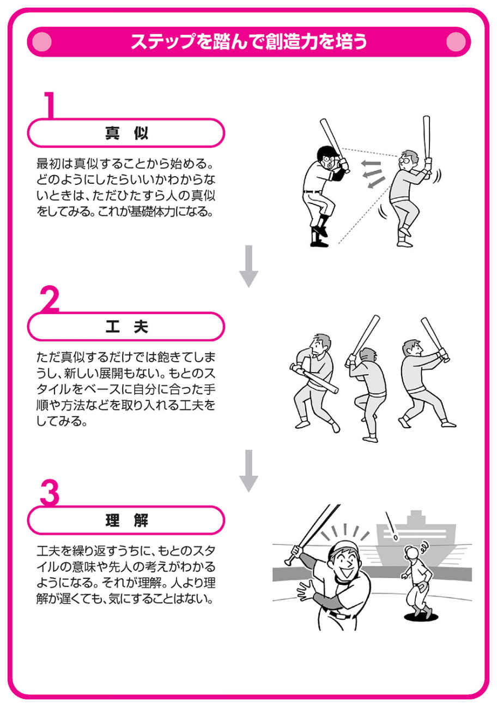
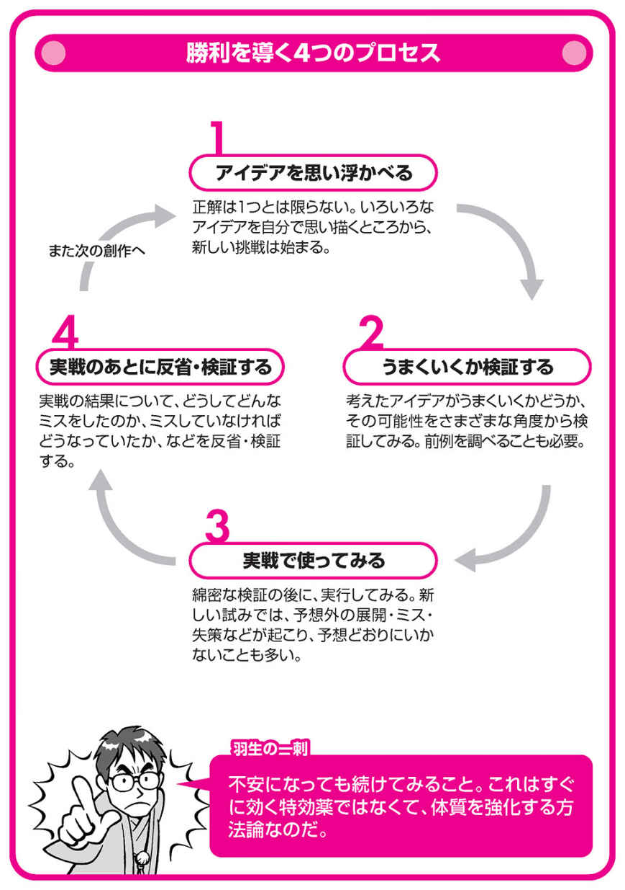

| ［図解］羽生善治の頭脳強化ドリル 直感力、集中力、決断力、構想力を鍛える | |
| 羽生 善治 | |
| 株式会社ＰＨＰ研究所 (2007) | |

【図解】羽生善治の頭脳強化ドリル
直感力、集中力、決断力、構想力を鍛える
羽生善治
図解● 羽生善治の頭脳強化ドリル● もくじ●
カバーデザイン 一瀬錠二（Art of NOISE）
カバー・本文イラスト 森マサコ、タイプフェイス
カバー・本文写真 岡村啓嗣
編集協力 古作 登・竹内恵子・メディアプレス
もっと効率的に仕事をして、いい結果を出したい──。ビジネスマンなら、誰もがそう考えるはずだ。
しかし、どこから手を付けていいかわからず途方に暮れている人もいるかもしれない。
また、毎日が漫然とした仕事の繰り返しになってしまい、そこに価値や意義を見出せないという人達も、多いだろう。
こうした状況から脱却するには、色々な方法論を学んで、それを独自に組み合わせていくことだ。将棋には、そのヒントがたくさんある。
将棋は、敵味方それぞれ八種類二〇枚ずつの駒を使って、一手でも早く相手の玉（王将）を詰ますゲームだ。そこから学べる要素はたくさんある。
将棋は日本独自の文化
将棋の起源は、紀元前三〇〇年頃にインドで発明された「チャトランガ」だといわれる。それが西洋に渡ったのがチェス、アジア各地を経て平安時代頃に日本に輸入されたのが将棋だ。
日本の将棋の特徴は、ルールの変遷において、どんどん駒の力を弱くしたことだ。駒の強さのばらつきをなくして、その代わりに相手から取った駒を再び活かして使えるという、独特のルールにある。
突出した個をつくらず総合力で勝負し、「歩」の存在が大きなカギとなる日本的な組織と、きわめて類似していると思う。
将棋の発想をどう活かすか
「将棋は歩から」という言葉があるように、組織においても一人ひとりの個人をいかにうまく活かすかが大切だ。しかし、意思決定において一人で決める将棋と、合意を形成することが基本にある組織とでは違いがある。
一方で、将棋とビジネスには、次のような類似点もある。
・完璧な戦略・戦術はなく、どんな作戦にも長所と短所があり、その長所を活かすようにすることが勝利や成功に結びつく。
・常に相手がいるので、自分の希望どおりにものごとが進むことはめったにない。
・相手の動きに応じて一つひとつ自分の方針を確認し、考えを練り直しながら、ものごとを進める。
・予想外なことが起こった場合、それに対応する力が必要。
・失敗をしても言い訳が利かない。
本書は、そんな共通点を見出しながら、厳しい昨今の日常生活において何かしらのヒントになるものはないかを提示したものである。
将棋とは、瞬時の 閃 き、粘り強さ、集中力、情報収集力、勝利への強い意志を必要とする頭脳スポーツだ。本書があなたの頭脳を刺激し、ステップアップのきっかけになれば幸いである。
１ 直感は問題を解決するための「羅針盤」
問題に直面したとき、まず誰もが思い浮かぶのが直感だ。
ここでは、直感とは何かを考えてみよう。
論理的思考は直感に結びつく
直感は、具体的に頭の中で計算したり表現したりするというものではない。文字どおり〝 感〟 である。
「この策がよさそうだ」「この方法はダメだ」という〝 感〟 は、ほとんど無意識のうちに出てくる。
たとえば将棋では、「この局面はこの手しかない」と、一〇〇パーセント確信をもって最善手がわかるときがある。
このとき、論理的な思考は直感へと昇華されている。
ギリギリの勝負の場面では、持ち時間が少なくなっている場合が多いので、すべてを確認している余裕がない。だから、無意識のうちに思考の過程を省略して、流れのなかで「これしかない」という判断を、どんどん行っているのである。
その意味で、直感は進むべき道を示す「羅針盤」のようなものだ。それに論理的思考が加われば、さらに判断は正確になる。
データはあくまでも資料
こうした閃き、直感を得るには、もちろん基本的な勉強も必要ではある。
しかし、あまり過去のデータなどは考えないほうがいい。
なぜなら、データには依存性があり、閃きを妨げる性質ももっているからだ。
人は、判断に迷って自信がもてなくなると、「あのときはこの方法でうまくいった」「このケースではこのやり方で失敗した」といったデータに、どうしても頼りたくなってしまう。
だが、このようにデータに依存するうちに、いつのまにか自分自身で考える力が弱くなってしまうのだ。
データはあくまでも有意義な資料として位置付け、それを活用しながら、どこまでも自分の頭で考えていくことが、とても大切だ。
アイデアは空白から生まれる
アイデアは、デスクに向かっているときに必ず思いつくとは限らない。
むしろ、通勤電車に揺られているとき、車を運転しているとき、休日に家で横になってゴロゴロしているときなどに、パッと思いつくことが多い。
ニュートンは、たまたまリンゴが木から落ちるのを見て、万有引力の法則を発見した。いつ、どこで閃くかは誰にもわからないのだ。
それを受け入れる空きスペースを自分のなかに用意して、「そのとき」まで楽しみに待つことだ。
２ 当事者としての行動で直感は養われる
直感力は、人間がもっている優れた資質の一つである。
私はこれまで公式戦で一〇〇〇局以上の将棋を指してきたが、常に直感を大切にしている。
まず直感から思考が始まり、確認のときもそれに頼っていることが多い。
直感は高純度の思考
直感や閃きは、まったく何もないところから偶然に出てくるものではない。
また、漠然と思い浮かんだいくつかの考えのなかから、クジ引きのようにランダムに選ぶものでもない。
それは学習、経験など、自分自身が今まで積み上げてきたもののなかから瞬間的に取捨選択し、判断を下しているものである。
そこには、思考の妨げとなるようなためらいや恐れなどが介入できない。だから直感は「純度の高い思考」ともいえる。
経験を積むことの功罪
直感は自分自身の経験の積み重ねのなかにあるのだが、経験を積むことはいいことばかりとは限らない。そこには、次のようなプラス面とマイナス面がある。
・プラス面──考えの幅や判断材料が広がる
プラス面は、考える材料や考え方の幅が広がり、ものごとをいろいろな角度から判断できるようになることだ。
たとえば、五年前のあなたと現在のあなたを比較してみてほしい。考える方法論の数や、判断を下す材料の数は、いろいろな経験を積んだ今のほうが、間違いなくたくさんもっているはずである。
・マイナス面──迷いや怖れの材料も増える
経験によって〝 判断を下す材料〟 が増える一方で、〝 判断に迷う材料〟 も増えていく。
そのため、悩んだり迷ったり、ときには 怖 気 づいたりして、かえって判断を下すまでに時間がかかってしまうことはよくある。
また、マイナスの経験をもってしまうと、勝負どころで踏み込みを思いとどまろうとする気持ちが働くこともある。
その比重は、年齢が上がるにつれて高くなるようだ。
このように、経験が常にプラスになるとは限らないのである。
当事者として考えよう
直感を磨く方法としては、とにかく当事者意識をもって行動し、決断をしていくことだ。
なにごとも、他人事と受け止めている限りは真剣さに欠け、真の実力がつくことにはならないのだ。
当事者意識をもって真剣に考え、行動し、決断を下すことを繰り返していくうちに、自然と直感の精度は上がっていくはずだ。
３ 細部にとらわれず、簡単に、単純に考える
私たちは日常のさまざまな場面で、「問題を長引かせるな」と、よく口にする。
問題を先送りしても、状況が良くなるわけではない。
むしろ、負のサイクルに入って状況がますます悪くなるケースがほとんどだ。
将棋でも、長考すると迷いが生じやすく、集中力を欠いて悪手を指してしまうことがある。
勝負どころで直感力を発揮するには、あまりごちゃごちゃと複雑に考えすぎないことが大切である。
思考を複雑にしないための方法
アメリカのカーネギー・メロン大学でロボットの研究をしている金出武雄先生から、興味深い話をお聞きした。
人工知能やロボット工学の世界的権威である先生は、学生を指導するとき、「キス・アプローチでいけ！」と言うのだそうだ。
キス（ＫＩＳＳ）とは、"Keep it simple,stupid!"の頭文字。軍隊用語からきたアメリカの俗語で、部下がうまくできないとき、軍曹が「もっと簡単にやれ、バカモン」と言う感じだという。
ものごとを簡単に、単純に考える〝 キス・アプローチ〟 は、仕事を推し進めていくうえでの指針になるはずだ。
マイナスをプラスに変える発想
また、金出先生は、こうもおっしゃった。
「科学では、『できない』は『じゃあ、研究をやめようか』ではなく、そこを避けて通れば解決できる方法が見つかることだ」
ネガティブな結果をプラスに転換するこの発想は、複雑な問題に直面したときの閉塞感を突き破る鍵となるだろう。
不安なときはあえて単純化しない
仕事をしていると、「いろいろ考えたが、どうしたらいいかわからない」と、判断にためらうような場面も出てくる。
こういうとき私は、〝 キス・アプローチ〟 を踏まえたうえで、あえてものごとを単純化しないようにしている。
なぜなら、単純化しすぎてしまうと、ものごとの核の部分が抜け落ちてしまう可能性があるからだ。
また、不安な場面やはっきりしない場面では、「早くこの状況から抜け出したい」と考えて、安易な答えに飛びついてしまいやすいということもある。
しかし、本当に混純としている場面では、何がキーになるかもわからない。
そんなときに、〝 キス・アプローチ〟 によって余分な要素を取り除く作業は、とても大切だと思う。
そして、それは直感によって出来る大きなことでもあるのだ。
４ ゴールが近いと錯覚をしない
将棋では、あと一枚駒が入ったら相手玉が詰むのに、その駒が取れないということがある。
そのときは、ゴールが間近なのではなく、まだまだ距離があると考える。ゴールが近いというのは錯覚で、それまでどおりの歩幅で進む要領が大切だ。
経験をきちんと消化する
直感力は、さまざまな経験によって鍛えられていく。閃くためのマニュアルはない。
経験のプロセスについても、昔は何年かをかけて先輩から直接的、間接的に身につけていったはずだ。
ところが、今は手軽に情報が入るので、その気になればいくらでも勉強はできる。
かつて自分が二年も三年もかけて学んだことを、後輩が一冊の本を読んで理解しているのを見て、「これまで自分がやってきたことは何だったのか」と、虚しさを感じる人もいるかもしれない。
しかし、これまでの経験がまったく無駄だったのかというと、そんなことは決してないはずだ。むしろ、学ぶプロセスを省略して一気に詰め込んだ知識が、そのまますぐに使えることは稀なのだ。
いくら栄養価の高いものを食べても、十分に消化しなければ自分自身の骨や血にならないのと同じように、経験もきちんと消化しなければ役には立たない。
遠回りは損ではない
経験を消化するには時間がかかる。他の人々と比較したときには、遠回りのように感じることも多いだろう。
特に今はスピードを競う時代なので、なにごとも楽をして効率的に済ませたいと考える人が多い。経験を消化するのにも、わざわざ遠回りをして行くのは損だと思うかもしれない。
しかし、近道をしてもあるところからはゆっくり進む場面になる。「急がば回れ」ではないが、着実に進めば大きな後退もないといえる。
諦めないことから閃きは導かれる
不利な状況になったとき、「諦める」のと、「諦めに似た気持ちになる」のとでは、明らかに異なる。
諦めるとは、集中力や持続力が完全に切れてしまうことだ。
一方、諦めに似た気持ちは、欲や邪念がなくなってリラックスにつながるため、今まで見えなかった活路を見出す嗅覚を呼び覚ましてくれることがある。
不利な状況に追い込まれたときでも、それまでと同じ歩調で淡々と問題に向き合っていくことが大事だ。たとえ結果は出なくても、ベストを尽くすそのプロセスは、その人にとって大きな財産になるはずである。
５ 他の可能性を考えながら常識と上手に付き合う
将棋の定跡は、長年の実戦経験からつくり出された知識の集大成だ。一般社会で言えば「常識」であり、ロードマップである。すでに多くの先人によって試行され、確立されてきたものだから、あるところまでは安全確実に進む 道標 となる。しかし、それが必ずしも正しいとは限らず、不備な点があれば修正される。これは、どんな世界でもきっと同じことだろう。
常識は変化する
常識は時代とともに変化する。たとえば、今は誰でも当たり前のように携帯電話を使っているが、十五年前はそうではなかった。
このように、常識は少しずつ変わっていくので気がつきにくいことが多い。しかし、何十年に一回は大きな変化が起こる。いわゆる歴史の節目だ。これは誰でもわかりやすいが、もっと小さな変化を見逃さないということが、常識を捉えていくうえで大切なことだ。
常識の三つの落とし穴
常識は確かに大切だが、そこには次のような落とし穴があることも知っておくほうがいい。
①考え方が型にはまりやすい
常識や前例には「こういう選択をすると結果はこうなる」というロードマップがある。それに頼れば、ある段階まではオートマチックにものごとを進められるが、考え方が類型にはまり、閃きが生まれる余地がなくなる。
②飽きがきやすい
毎回毎回、決まった形の仕事をするのは面白くない。飽きてくる。ときには苦痛に感じることさえある。毎日ざるそばを食べ続けていると、だんだんイヤになってきて、たまにはトンカツ定食にしてみたいと思うのと同じだ。
③状況の変化に追いつかない
常識に縛られると独創性が失われ、「今までと違う発想をしてみよう」という気が薄れてくる。仕事を取り巻く状況は刻々と変化しているのに、同じ場所にとどまっていては進歩がない。
常識を絶対視せず問題意識をもって見る
仕事が今のように体系化されていなかった頃は、努力すればいくらでも新しい方法を見つけることができた。しかし、情報化が進んだ今では、それがどんどん発掘されて新しい発見が難しくなり、どんな仕事もある段階までは誰がやってもほとんど同じになっている。
だからこそ、多くの人がそうしているからといってそれを鵜呑みにせず、他の可能性も考えながら常識と良好な関係を保つようにしたい。
将棋の世界では、一年前に常識と思われていた定跡が今はもう通用しない、ということはざらにある。となると、今の常識も十年後には間違っている可能性があるわけだ。しかし、未来のすべてを予測することは難しい。問題意識と洞察力を常に持ち、未来に対する嗅覚を研ぎ澄ませていく必要がある。
閃きは、そのなかから生まれるのだ。

６ 集中力の限界を知る
集中力を高めていくときに、気をつけなくてはならないのは、集中には限界があるということだ。
どんな人でも、二十四時間集中し続けることは不可能だ。まず、自分の限界はどれくらいかを知ることから始めよう。
段階的に考える時間を伸ばす
自分自身がどれだけ考え続けられるかを知るには、どうすればいいか。頭がボーッとした感じになったときが、集中が途切れた目安だ。
そこから少しずつ、集中する時間を増やす努力をしていこう。
ただし、ただ考えればいいというわけではない。瞬間的な密度は、決して落とさないのがポイントだ。
対局中は思考の波にメリハリをつける
もてる集中力を最大限に発揮するために、次のようなことを心がけている。
・徐々に、深く集中する
集中する、とは海に潜る感覚に似ている。
スキンダイビングのとき、水圧にからだを慣らしながらゆっくりと潜っていくように、集中力も徐々に深めていくべきだ。初めから一気に集中しようと焦ると、浅瀬でばたばたするだけで、それ以上深くまで潜ることができない。
逆に、このプロセスをうまく踏めれば非常に深く集中できる。
また、焦り、不安、怒りなどのネガティブな感情は、集中するときには特に禁物だ。よくいわれる「平常心」は実に合理的な発想なのだ。
・集中感覚をはっきり記憶する
深く集中しているときの感覚を、頭だけではなくからだにも記憶させる。集中のプロセスを意識に植えつけることにより、短い助走期間で集中できるようになる。
・キレないためには気分転換
プロ棋士といえども、何時間も集中して考え続けることはできない。緊張状態が長く続くと、つい平常心を失ってケアレスミスが起きやすくなるので、お茶を飲んだり、席を外したりして、思考の波にメリハリをつけている。また、今は集中が必要な場面かどうかも判断する。
こうしたことは、車を運転するときのギアチェンジのようなものだ。状況判断と深く結びついているともいえる。
対局が終わったあとは早く忘れる
ミスを反省するのは大事だが、忘れることはそれ以上に大切だ。
私は、失敗の原因を突き止めたらすぐに忘れるようにしている。過去に引きずられたくないので、日記も書かない。
また、いったん将棋から離れて頭の中をクリアにするために、たまに水泳をしている。負けてものすごく悔しいとき、水泳は最高の気分転換になる。泳いでいると、いやでも無心になれるのだ。
７ 楽しさは集中力に比例する
集中力は、人に教わって身につくものではない。では、どのように集中力を養えばいいのだろうか。人はどんな状況で集中するのかを観察してみると、その答えがわかってくる。
集中力を養うヒント
①夢中になれる環境をつくる
私は小学校低学年の頃から地元の将棋道場に通っていたが、そこで指す二、三時間はあっという間に過ぎ、気付くと帰る時間になっていた。子供は、好きなことなら時間のたつのも忘れて、夢中でやり続けることができるのだ。
また、サッカーや野球が好きな子は、誰からも強制されていないのにちゃんとルールを守りながら自由にやっているし、特別な遊び道具がなくても、今あるもののなかから楽しさを探し出し、それに向かっていく。
そういう楽しさに比べたら、それにともなう小さな苦労や努力は、たいしたことではないと感じるはずだ。
これは大人も同じで、自分自身が望んでいること、夢中になれることがあれば、それによって集中力を養うことができるのだ。だから、いかにして「自分が集中できる型」と希望を合致させるかがカギになる。
②遊んでいるときの充実感を思い出せ
実は、すでにあなたは「自分が集中できる型」をつくっている。
なぜなら、ゴルフでも日曜大工でも、自分が好きなことをしているときには、ものすごく集中しているはずだからだ。
そのときの充実感や幸福感を思い出せば、集中のノウハウがわかるだろう。
人は、興味のないことには集中できないが、好きなことなら自然と一生懸命になれるのだ。
不快な状況との付き合い方
仕事のプロセスにおいて、不快なことが皆無ということはありえない。
それでもやらなくてはならないときに役立つのは、ピンチをうまく切り抜けるヒーロー、ヒロインの姿だ。身近にいる先輩でも、映画や小説に登場する架空の人物でもかまわない。それがあなた自身だと考え、不快な状況を乗り切る場面をイメージすることによって、ピンチを当然のことと受け止めることができるだろう。
失敗をしても集中力は持続できる
将棋は負けるとつらいゲームで、負けが続くと盤を見るのも嫌になるものだが、「新しい戦法を試して収穫もあった」と、何か一つでも納得できる部分があれば救われるし、次につなげていくことができる。
結果として失敗をしても、そこから学べることは多い。うまくそれを次につなげれば、何倍もの大きな収穫になるときもある。一つのプロセスを気にしすぎないのが集中のコツだ。

８ 常に僅差の緊張感で集中力を維持する
深く集中するには平常心が大切だ。
しかし、平常心を心がけるといっても人間であるから、うまくいっているときは有頂天になるし、逆のときは落ち込んでしまう。
そんなときに集中を保つには、どうしたらいいのだろうか。
一手の差なら追いつける
対局に臨むとき、私は、一手の差であれば続ける価値があると考えている。
一手の差とは、一手の悪手の差ではなく、一手の次善手（ある局面で二番目にいい手）で追いつける差のことだ。つまり、相手がリードを守ろうと手堅く行こうと思い、最善手ではなく次善手を指した場合には追いつけるチャンスが生まれる。
最善手と次善手、この差はわずかに思えるかもしれないが、プロ棋士にとっては、その差は大きい。ましてや、相手の悪手によってようやく追いつけるような差では、たいへんな距離と思っていい。
二手差以上離されてしまったら、その勝負は諦めて、投了（敗戦）を覚悟するしかない。
僅差が集中を維持させる
僅差であれば少しのリードも油断がならず、絶えず緊張にさらされる。しかし、そんな状況になってこそ、初めて力が発揮できることもある。危機感やプレッシャーは眠っている力を呼び覚ます効果があり、それこそが集中を維持する原動力にもなる。人間は基本的に怠け者なので、何かが起こらないと、自分がもっている本当の能力に気がつかないものなのだ。
だから、形勢が悪くなっても諦めてはいけない。マラソンでは、先頭の選手の背中が見えているうちは、逆転を信じて気力を維持できるが、背中が見えなくなるほど離されてしまうと、その気力が失せてしまうという。ビジネスも同じで、不利でも緊張感が萎えないようなポジションをキープしておくべきなのだ。
そして、わずかな差でリードしたりされたりという繰り返しによって、大きな集中力が生まれてくるのである。
「大差で有利」は危険がいっぱい
自分の形勢が有利なときは、集中力が緩んで判断に迷うことが多くなる。安全勝ちを狙うと、相手に差を縮められたとき焦ってしまい、逆転の憂き目を見ることもある。
実戦心理でいえば、悪いほうは開き直って伸び伸びとできるから、差を広げたことで、相手を勢いづかせてしまうことが少なくないのだ。
これとは逆に、ギリギリ一手違いの有利なら、集中力は緩まない。深く集中して頭がよく回転すれば、「この形で決着をつけよう」と着地点を的確に想定できるし、そこまでの手順を丁寧に組み立てることもできるのである。
９ 記憶力を鍛えるには理屈よりテンポとリズム
「記憶力を鍛えるコツは？」と、よく質問される。
〝 記憶する〟 とは、色々な情報を集め、 咀嚼 し、吸収していく作業だ。その作業効率を高めるコツを、以下に紹介しよう。
記憶とは流れをつかむこと
プロ棋士は、何百という数の対局を記憶している。たとえば、一九九六年の名人戦の第五局は......という具合に、対局から十年以上たっても、そのときの百数十手の棋譜を再現できる。
プロのスポーツ選手も同じだ。野球の投手は一試合の自分の配球を全部覚えているというし、ゴルファーも、何番ホールのセカンドショットはグリーンから何ヤードで風向きは......と、その時の状況をあとから克明に再現できる。
これは、論理的に覚えているというよりも、一つの試合の流れ、テンポとして連鎖して覚えているのだと思う。歌を覚えるのと同じように、初めのワンフレーズが出てくれば、次から次にそのあとの歌詞が出てくるのと同じ感じだ。
ものごとには流れがありテンポがあるので、一つの形が見えると次はこの形がくる、というリズムで覚えたほうが覚えやすいのである。
常識外の形は記憶しにくい
逆に言うと、常識の外にある形は記憶するのが難しい。でたらめなメロディの歌をなかなか覚えられないのと一緒だ。
私は以前、将棋のルールを覚えたばかりの幼稚園児同士の早指しを解説したことがあるが、局面を再現するのにものすごく苦労した。覚えたての子供は、「この手はないでしょう」という常識外の手を、互いにどんどん指してくるからだ。
必要のない情報は忘れてかまわない
記憶力を高めることは大事だが、〝 忘れること〟 も必要だ。
といっても、忘れ方のコツが特にあるわけではない。人間は誰でも、「この情報は自分にとって必要かどうか」という判断をどこかでしているものなので、特に意識しなくても、自然に忘れていることが多いからである。
元来、人間には日々覚えていかないといけないことがたくさんある。けれど、新たに何かを明確に覚えようとすれば、別の何かを同時に忘れていかないと、すべてを覚えるのは難しい。膨大な情報に囲まれている現代ではなおさらのことだ。
記憶には、短期的に覚えていることと長期的に覚えていることがあり、それぞれが脳のなかに別々に存在しているらしい。記憶を自動的に編集しているともいえるわけだ。
たとえ一カ月前のことを忘れていたとしても、それは覚えておく必要がないから忘れたのだと考えれば、気落ちしなくて済む。
10 集中できないときは、無理をしなくていい
人には誰でも好不調の波がある。それは天気と同じで、人為的に操作ができるものではない。しかし、雨が降ってきたら傘をさすような方法は考えておく必要がある。
調子のバロメーターは気力と思考
調子の良し悪しを測るバロメーターになるのは、気力と思考だ。やる気があれば集中も深いし、苦難に打ち勝つ力も大きい。
しかし、人間はいつもこのような良い状態を保てるわけではない。ときには気力が萎え、思考力も集中力も落ち込んでしまうことがある。
そんな悪いサイクルに入りそうになったら、何か変化を試みることだ。新しい趣味や習い事に挑戦したり、ドライブしたり、映画を観たり、何かしらやって変化することで悪いサイクルを断ち切り、良いサイクルに入りやすくなる。
常に現在の風向きを考えて行動していけば、微妙なサイクルの移り変わりを感じられるようになってくる。それさえわかってしまえば、問題のかなりの部分を解決したと言えるのだ。そして、それが効果的な思考へとつながっていく。
調子に応じて集中できる環境をつくる
調子の良し悪しの波をつかんだら、次は、その波に合わせてできることを的確に実行し、集中できる環境をつくっていこう。
調子のいいときは、一時間仕事をしたら十分間机の上を片付けたり、周りの人と雑談するなどして、自分のリズムでペース配分をしよう。
長時間、一つのことを考え続けるときには、「ここは深く考えよう」「ここはちょっと休んでいよう」と、メリハリをつけるのが集中力を維持するコツだ。プロ棋士も、長考に入ったときには、ときどき思考を一時停止させている。
不調のときは無理に集中しなくていい
何をやってもうまくいかなくなったときは、まず、自分の実力不足からくるものなのか、不調の波に入ってしまったのかを考える。
実力不足ならば、力をつける方法を探し出さねばならない。
不調で何かが噛み合っていないだけなら、気分転換したり習慣を変えてみたりして、頭の中をリフレッシュしてみる。
そうすると、通常モードだったときを自然に思い出して、平均的なパフォーマンスを取り戻すことができる。
また、それが新しいことを吸収するきっかけになったり、まだ使われていない能力に気がついたりすることにもなる。もしかすると、ある程度の不調は、進歩をしていくうえで必要不可欠な要素なのかもしれない。
その時々の自分の状態に合わせた対応をとること、瞬間的な出来事や結果ばかりに目を奪われないことが、調子の波との自然な付き合い方だと思う。
11 思考の逆サイドで幅を広げる
どんな仕事にも基本となるセオリーがある。これは非常に大事だが、それだけを守っているのでは誰がやっても同じ仕事になってしまう。
ほかの人に差をつけたいなら、仕事のなかで何か一つでも、人と違うことをするようにしよう。以下に挙げるポイントを意識すれば、比較的容易にできるはずである。
面白いと思う方法は掘り下げる
自分では面白いと感じていても、いろいろな制約からやりにくいと感じることは多いかもしれない。しかし、そうやってどんどん自主規制していくと、アイデアは浮かばなくなるものだ。自分に対しても他人に対しても寛容な気持ちをもつことから自由な発想が生まれ、創造の相乗効果も表れる。
無駄と思われることもあえて実行する
たとえば、特急に乗れば二時間で行けるところへ、わざわざ鈍行を使って半日がかりで行ってみる。
実際に鈍行列車に乗ってみると、それまで見過ごしていた小さな駅のたたずまいや田園風景の美しさに気づいて、ハッとすることがある。
このように、思考のポイントを逆サイドにつくると新たな発見があり、それがきっかけで人と違うことができるようになるケースは多い。
また、普段みんなが無駄だと思っている仕事のなかに、思いもかけない貴重なヒントが隠されていることもあるものだ。
羅針盤のない世界で自分を試す
体系化やシステム化というのは、言葉を換えれば「単純化」ということだ。今は、ものごとがどんどん単純化しているが、人間とは不思議なもので、そうなると逆に、「ちょっと面倒くさいけれど、人がやらないような複雑なこともやってみようか」と思うようになる。
人と違うことをやるのは、羅針盤なしで大海原を航海するようなものである。常識や前例が通じない場面だらけの世界で、自分なりに考え、もがきながら試行錯誤することになる。そうしたケースでは失敗する可能性も高い。
だが、たとえ失敗しても、ほかの人にない貴重な経験を得たわけだから、次に活かすようにすれば、それが実力になって表れるはずだ。「こんなやり方はありえない」と思っても、実際に一つの仕事がクライマックスにさしかかって複雑な世界に突入すると、そこに出現するのは未知の状況だ。今、この場面と同じものは過去にはない。どのみち、最後の判断は自分で下さなければならないのなら、みんなと違うこと、逆のことをやってみるのも面白い。「違うやり方もあるのではないか」「可能性がゼロに近いことだが試してみようか」と思うところで直感力は鍛えられる。そして、そこから新しい考えやアイデアが生まれるのである。
12 経験が乏しい若いときはロジカルに考える
将棋は「読み」のゲームである。
読みとは、自分がこう指すと相手がああ指す、そこで自分はこう指す......と、次の手、またその次の手を順を追って考えていくことで結果の可能性を探ることだ。
そして、その積み重ねのなかから戦略を見つけていく作業なのだ。
「読み」とはどんな形か
読みの広がりは木の形によく似ている。
一つの場面でＡ、Ｂ、Ｃの可能性があれば、それに対して、 、
、 、
、 のように莫大な可能性がそこにはある。指し手の可能性は、一〇の三〇乗ぐらいあるといわれ、地球上の空気に含まれる分子の数よりも多いという。
のように莫大な可能性がそこにはある。指し手の可能性は、一〇の三〇乗ぐらいあるといわれ、地球上の空気に含まれる分子の数よりも多いという。
たくさんの可能性を考えていけば、それだけでその局面の理解が深まるわけで、できる限りたくさんの手を読んだほうがよい。
しかし、それでも考えられるのは、全体のなかの一部分にすぎない。
「木を見て森を見ず」という言葉があるが、読みだけではそんな死角に落ちやすい。だが、読みは完璧を目指すときには非常に大きな役割を果たすことになるのだ。
論理的に考えて判断を積み上げる
読みとは、ロジカルに考えて判断を積み上げていくことだ。
読みにはその状況からの積み重ねの結果となるべき狙いが必要なので、「こうなればいいな」という状況を想定し、そうなるためにはどうしたらよいかを考える。
この作業はとても大事だ。特に、経験が乏しい若い頃は、最善の方法を一つひとつ手さぐりで探すしかないので、読みのような、手間はかかるけれども論理的といえる思考に頼ることになる。
だから若手の棋士は、簡単な一手を指すにも、百手、二百手と膨大な量を片っ端から読んで指すことになる。
余分な手まで読んでいるように思えるかもしれないが、直感力や判断力は、こうしたプロセスの蓄積によって鍛えられるのである。
プロはどのように読んでいるか
将棋では、一つの局面に八〇通りぐらいの指し手の可能性がある。
プロ棋士が指し手を読むときは、まずそこから二、三通りの手を直感で選び、残りの九〇パーセント以上の可能性は捨ててしまう。カメラのフォーカスを絞って焦点を定める感じだ。
すべての可能性について均等に考えるのではなく、不要なものは初めから検討の対象から外してしまう。
次に、絞り込んだそれぞれの手に対し、頭の中に描いた将棋盤で駒を動かして、目的地までのルートを綿密に検証していく。
これは、意思決定をするうえで重要なポイントである。実戦は予測・検証・決断の繰り返しによって成り立っているのだ。
仮に、絞り込んだ三つの手に対してそれぞれ三つの候補手があれば、指し手の可能性は九つに増える。それがさらに枝葉に分かれていくので、三百手、四百手と読むことになる。
それでも不確定の揺らぎがある
このようにして、どんなにたくさんの手を読んでも、それでも予想どおりにはならない不確定の揺らぎがある。
そんなときは地道に一から考え直す。想定外のことが起こっても、それを想定内と捉えて、気持ちの揺らぎをつくらないことが大事だ。
無駄だと思える読みも、その後の展開において大きな厚みになることは、よくあるのだ。
無駄を無駄と考えなくなってくれば、自信も冷静さも自然に身についてくるはずだ。それが地道で着実な思考力というものなのだろう。
13 経験から大局観が築かれ、思考が速くなる
棋士は、「読み」と併せて「大局観」を活かして勝負している。大局観とは、具体的な手順を考えるのではなく、文字通り大局に立って考えることだ。
大局観がしっかりすれば、「ここで攻めたほうがいい、守ったほうがいい」「これは長い勝負にしてはいけない」といった方針がわかり、次の一手が非常に見えやすくなる。
複雑な状況のなかで決断を下すとき、大局観も使えるようになれば、そこから突破口を見出せるはずである。
思考の過程を拡大する
読む作業は、歩が一つ進むとか、銀が斜めに下がるとか、将来の場面を想定することだ。
一方、大局観は、パッとその局面を見て、今の状況はどうか、どうするべきかを判断する。
たとえば、攻めるべきか、守るべきか、じっと待っているべきか、展開が速いのかなど、流れを感じることだ。
若い頃は集中力が高いから、短時間でたくさん読むことはできるが、「自分が読んだ」という狭い材料で判断するしかない。
一方、年齢が上がると、短時間で読む力は衰えるが、経験を重ねているぶん判断材料は広くなり、思考の過程をできるだけ省略する方法も自然と身についてくる。
ひとくちに「思考」と言っても、それをどれくらいの比重で行うかによって、まったく異なる中身になる。
料理ではないが、微妙な 匙 加減によって、できあがる味が変わってしまうのだ。
読みと大局観は補完しあうもの
読みは最初に直感で候補手を二、三に絞り、それぞれの可能性について考えるのだが、一〇手先になるとものすごい数になってしまう。
こうなると、時間がいくらあっても足りないので、大局観も動員することになる。それにより、無駄が省略され、正確性が高まり、バランスのとれた思考になるのだ。
つまり、読みと大局観は車の両輪のようなもので、お互いに補完しあう存在なのである。
大局観の築き方
大局観は、机上の勉強ではなく、多くの実戦を経験することで磨かれる。
未知の場面を当事者として乗り越えていくことにより、異なる未知の場面にも対応できるようになってくる。そして、それを繰り返していくことによって、失敗を回避する方法が身につき、さまざまな場面における重要な要素を抜き出せるようになってくるのだ。
もちろん、このような思考力を培っていくためには、そのテーマに真剣に取り組まなければならないし、他人事として考えていては実力は身につかない。
14 序・中盤は構想を、終盤は収束を考える
ものごとの細部のみにとらわれて全体を見ようとしないたとえに、「木を見て森を見ず」という言葉がある。状況を判断するときは視点の定め方が大切ということだ。
細部にばかりこだわっていると、大きな流れは決して見えてこないし、逆に全体だけを見ていると正確さや精密さに欠けて、きちんとしたものは完成しない。その場面に合わせた視点が大切なのだ。
構想を考える
序・中盤では、構想を考えることが大切だ。
つまり、これからやるべきこと、発展することがたくさんあるので、それらをどの順番で、どういう形を目指してやっていくかの計画を立てるのである。また、後に支障をきたさないようにもしなければならない。
崩れにくい堅固な構想は、一つひとつの基礎をしっかりと固めていくことによって生まれる。
ただ、時間的な制約が常にあるので、有限の時間のなかで有効に打てる手段を考えることも必要だ。完璧を目指しすぎると、その目標にまったく届かなくなってしまうこともよくある。
さらに、自陣の弱点や欠点も客観的な視点から認識しておけば、時間があればそれを捉えるし、場合によっては、あえてそこは何もしないなど、戦略としての一貫性がとりやすくなるのである。
詰めの場面では収束を考える
一方、終盤の詰めの段階では、視点ががらりと変わる。
ここでは一手でも速く相手の玉に迫ることが重要なので、速い攻めが確実につながるかどうかを読みながら、どのように収束していくかを考える。
もう大きな発展はないので、どのように着地をするか、そのポイントに焦点を当てていくことになる。
状況に応じて視点を変える
序盤戦だと思っていても、突然、急戦になって、中盤戦を通り越して終盤に一気に突入することもある。逆に、もう終わりだと思ったところからの切り返しで、中盤に戻るときもある。また、延長戦でどこまで続くかわからなくなってしまうこともある。
状況とは常に変化するものなので、変化に応じて視点を変え、その波にうまく乗っていく感覚が大切だ。
うまく乗れればとても楽しいものだし、潮の満ち引きのような、ある種の法則性を探し出せるかもしれない。
せっかくもっている能力や実力を、状況に合わないという理由だけで使えなかったのでは、なんとももったいない話だと思う。

15 迷ったらゴールを強引に設定する
どんなに考えていても、人は迷いや不安に襲われることがある。そんなとき、どうすれば活路を見出せるのか。私は、次のようなアプローチをしている。
迷ったときの対処法①
・ゴールを強引に設定し、どういう道筋を行けばそこに到達できるかを探る
一つのミスも許されない瀬戸際に立たされたとき、展開が読めないというのは一番つらい。
そんなときは、強引にゴールを設定して、そこへ向かっての具体的な手順を考えることがある。この考え方は「戦略」にあたる。うまくつながったときは、とても嬉しい気持ちになる。
迷ったときの対処法②
・これまでたどってきた道のりを見直し、その流れに沿った自然な道筋を選ぶ
初期段階で迷ったときは、とても最後の形など想定できないので、①とは逆のことをする。初手からたどってきた道のりを見直し、その流れに逆らわない選択を考えるのだ。
それまでの道のりは、ただ漠然と適当にやってきたのではなく、一つひとつの行動にはそれなりの意味があったはずだ。だから、その流れに沿って、次にどういう選択をすれば一番自然なのかを考えるようにするとよい。①の戦略に対して、こちらは「戦術」だ。
それでも迷うときには、とにかくそのまま進んでいく。自然な選択をしていれば、少なくとも無理はしていないことになる。そうして諦めず前へ進んでいけばチャンスもあるかもしれない。
膠着状態では相手に手を渡す
プロ棋士は対局中、常に自信をもって手を進めているわけではない。ほとんどの場合、「だいたいこのへんかな」と想像しながら指している。その意味では、アマチュアとあまり変わらない。
では、プロとアマの違いはどこにあるかというと、羅針盤がどれくらい正確か、という点である。判断に迷っているときや、いくら考えても手が見えてこない状況では、最善手を見つけられないことも多い。そのときにどの程度のミスで済むかどうかが、その一局を決めてしまうこともある。
こうしたとき、プロの羅針盤はだいたい正確な方向を示すので、ベストでなくても次善手は指せる。これなら極端に状況が悪くなるわけではないし、後から修復ができるときもある。
しかし、ときとして方向違いの一手を指してしまうと、形勢が悪くなるだけでなく、それまで苦心して築いてきた構想自体が崩れてしまうこともある。雄大な構想であればあるほど、ほんの小さなミスも許されないという皮肉な一面もあるのだ。
16 「真似」から「理解」へと進み、創造力を培う
初心者が何かを学ぼうとするときは心細いものである。大海原に小舟を漕ぎ出すようなもので、どこに向かって進めばいいかわからない。
こういうときは、前に通った人たちと同じ航路をたどるのが一番安全だ。どんなベテランでも、最初は真似から始めるのである。
定跡は〝 知の基礎体力〟 をつくる
将棋の初心者のおもな勉強法は、ほかの人の棋譜を並べる、定跡を覚えるということだ。
定跡は、四百年以上の歴史のなかで築かれた知識の集大成だ。江戸時代の名人がつくった定跡もあれば、現代のプロ棋士が編み出した定跡もある。アマチュアが考えた定跡も生きている。
ビジネスの世界では、先駆者が築いてきたさまざまな手法、前例、経験則などが定跡にあたるだろう。それらを身につけるのは簡単ではないはずだ。将棋でも、すべての定跡を学ぼうとしたら、何十冊本を読んでも足りない。
けれど実際には、本で勉強した定跡とまったく同じ局面になることはあまりなくて、少しずつ形が違う局面になるほうがはるかに多い。だから、大切なのは定跡を丸暗記することではなく、その少し違った形の局面で、学んだ仕掛けがうまくいくかどうかを考えることなのだ。
うまくいかなければ、自分なりに別の手順や組み合わせを工夫してみよう。その工夫を始めたとき、実は定跡が自分の〝 知の基礎体力〟 をつくってくれていることに気づくのである。
自問自答しながら学ぶ
定跡を学ぶときには、「これを考えた人は、なぜこの航路をたどったのか」「どんな過程でたどりついたのか」と、自問自答しながら進んでいくといい。
そうして航路を何通りも覚え、ある程度レベルが上がると、既存の航路から少し離れて、自分で航路を考えられるようになる。
すると、先駆者の考え方が、「ああ、そうだったのか」とわかるようになる。〝 真似〟 から〝 理解する〟 レベルになるわけだ。それは、とても嬉しいことである。
個人のアイデアは限られている。何かをベースにしてこそ、新しい考えがいろいろと思い浮かぶ。〝 真似〟 から〝 理解〟 へのステップは、創造力を養う基礎力になるのである。
理解が遅くても気にしない
ただ、このステップを進む速度には個人差がある。私の場合、定跡の内容を本当に理解するようになったのは、プロになってからだった。
それまで漠然と将棋を指していたのだが、このときから見える世界が変わったというか、可能性を考えていく楽しさを知った。
基礎の上からジャンプする創造力は、その基礎が厚ければ厚いほど高いジャンプになるのではないかと思っている。

17 「いかに捨てるか」で情報力が鍛えられる
いまや、情報収集にパソコンを使わないビジネスマンはいないだろう。将棋の世界でも、若い棋士たちを中心にパソコンを積極的に利用している。棋士は一通りのデータベースを共有して習得できるし、新しく出てきた戦法や戦型も、その日のうちに分析できる。
情報の蓄積だけでは無意味
だが、情報の量はあまりに多く、人間の脳が覚えられるキャパシティを超えている。そのため、いくつかの情報がごっちゃになり、記憶があやふやになってしまうケースも少なくない。
また、情報の流れが非常に速くなったため、今日得た情報が明日には古くなっている、ということもよくある。膨大な量の情報を、ただ蓄積していくだけでは意味がないのだ。
収集力より取捨選択の判断が重要
膨大な情報があっても、そのときに必要なものはごく一部にすぎない。それを抽出するには識別をするフィルターが必要だ。
情報収集そのものに時間を割いている人は多いと思うが、収集する手段や取捨選択の方法について吟味している人は少ないと思う。それを磨いていけば効率も上がっていくし、中身も濃くなるのではないか。
そのカギとなるのは、捨てるのを恐れないことだ。情報は「選ぶ」より「いかに捨てるか」が重要で、パッと見て「これはいらない、これは必要」と判断するセンスが問われる。
あるいは、同じことを繰り返すのを気にしないこと。有意義な情報というのは何回振り返っても違う味が出てくるものなので、決して時間の無駄にはならない。
また、一度は短時間で全体を振り返ることも大切だ。道筋を知っておくと理解が深まるケースが多い。そして、それが部分部分の理解になり、すべての理解へとつながっていく。
偶然というスパイス
もう一つ、忘れてはならないのが、情報としての塊のなかには、必ず「偶然」というスパイスが潜んでいることだ。
つまり、すべてが必然として進歩、進化をしているのではなく、そのなかに偶然が入ることによって事象を複雑にし、わかりにくくしているのである。
偶然は料理のスパイスのようなものなので、どれくらい入っているか、あるいは入っていることにさえ気づかないときもある。
しかし、偶然が常に入っていると考えれば、わかりにくい箇所、不自然なパートが出てきても、そこは飛ばして前へ進むことができる。
多くのことを処理しなければならない現代では、そこで立ち止まるよりも、大きな流れをつかんでから一つひとつの細かい部分を修正していく方法のほうが適している気がする。
18 情報は「知恵」に昇華させないと価値が無い
自らの判断で選び取った情報であっても、それはまだ単なる「知識」にすぎない。
もちろん、良質な情報や知識をたくさんもてば、それなりに応用力はついてくるので、いわゆる「傾向と対策」には強くなる。しかし、仕事の現場では、予想外の状況になったとき過去のデータだけでは対応できないことのほうが圧倒的に多い。「傾向と対策」に強いだけでは、変化に富んだ対応はできない。
知識にアイデアをプラスする
そういう状態を回避するためには、情報という「知識」に自分なりの新しいアイデアや見解を加えて、「知恵」に加工しなければならない。
たとえば、将棋には定跡というものがある。簡単に言うと定跡は、「この場所に行くには、こんな道が通っていますよ」と示してくれる地図のようなものである。
この定跡は、情報として非常によく整備されていて、知識を得るのは非常に簡単だ。私もプロを目指していた頃は、知識を得たいと思い、定跡を懸命に覚えていた。
けれど今思うと、ただ定跡を覚えただけではあまり役に立たない。そこに自分のアイデアや判断を付け加えないと、きちんとしたものとして自分の中に吸収されないという感覚がある。
定跡は、「常識」という言葉に置き換えてもいいだろう。「これが常識だ」といわれているものが、必ずしもいつも正しいとは限らない。それを鵜呑みにせず、もう一度自分の頭で考えて「知恵」に変えることが大切なのである。
知恵は状況判断に必須の要素
ここでいう「知恵」とは、そのときどきの場面で正確な判断を下すこと、問題を解決するためのツボをいち早く発見することだ。
数多くある要素のなかから一番大切なものを選び出すときに、カギになるのは、意外に地味で目立っていない要素かもしれないのだ。つまり、何か小さなキッカケから大きな方向性が動き出している場合は、その小さなキッカケを洗い出し、分析して、必要なければ修正をしないといけなくなる。それを見つけて適切な対応をするのが知恵なのだ。
知識を知恵に変えるためには
これは、どれだけ知識があってもできるものではなく、知識を知恵に昇華させることで初めて可能になる。獲得した情報や知識から何かを覚えるということが仕事の結果に結びつくのではなく、覚えたうえで、いったん白紙に戻してもう一度考え直し、完全に自分の知恵として昇華させるプロセスが大事なのである。
知識を知恵に変えようと工夫し、その知恵を武器にして自分なりの仕事をしていこうという探究心に支えられた姿勢があってこそ、初めて情報は結果に結びつくものなのだ。
19 人の仕事を研究し、情報密度・鮮度を高める
情報力を高める最良の方法は、人に訊くことだ。それには、次の二つの方法がある。
情報密度を高める方法①
・周囲の人の取り組みを研究する
同じテーマに取り組んでいる人たちを見つけて、その人たちがどんなことを考えているのか調べてみる。すると、自分がどのポジションにいるかが確認できるし、進んでいる方角もわかる。
アイデアや考え方が参考になることもあるだろう。
それに自分自身の発想や創造を付け加え、出来上がったものを見て常識的かどうか、独善的ではないかを確かめる。
こういった作業は時間をかけて丹念にできるところがよいところで、検証するプロセスとして大切なことだと思う。
また、社内に興味のあるプロジェクトなどがあれば、自分の担当でなくても、それに関わる人たちがどんな情報をどのように活用しているかを観察したり、「この状況でこういう判断をしたのはなぜか。自分ならどうするだろうか」と考えたりしてみる。その中から得られるものもあるはずだ。
情報密度を高める方法②
・勉強会に参加し互いの能力を高めあう
それでも一人で考えるのには限界がある。そんなときは他の人々といろいろ話をするのがよいと思う。そこから自分の頭が整理されることもあるし、大きなヒントを得ることもある。また、それによってお互い進歩をしていけば理想といえる。将棋の研究では１＋１が２以上になることが多い。これは相乗効果で、お互いにお互いの眠っている能力を呼び覚ましているからだと思う。ただし、どちらかに出し惜しみするような感情があると、こうしたシナジー効果は表れにくい。
勉強会・研究会の利点と欠点
・メリット──考えの幅と発想が広がる
自分だけで考えていると、誰でもひとりよがりになってしまい、理解が薄くなったり、自分の考えに固執したりする傾向が見られる。何人かで勉強し、ほかの人の意見を聞いて検討していくと、そうした盲点がなくなる。理解の度合いは二倍というより二乗、三乗と速いスピードで進んでいくし、自分では思い浮かばなかった発想も出てきやすい。一人ではイヤになるような勉強も飽きずに続けられるはずだ。
・デメリット──一人で考える癖がつかない
勉強会や研究会に全面的に頼ると、自分の力で一から考える癖がつかなくなってしまう恐れがある。同じメンバーで長く続けていると、緊張感が欠けてナアナアになることもある。まずは自分一人で考えていき、あるところまで到達した段階で共同して知恵を出し合うというやり方がベストといえるだろう。
20 固定観念を捨てて〝 異質〟 を受け入れる
将棋の世界では、最先端の型が日々変化し続けている。変化していくことは当然のことで、歴史の流れと同じように、「どうしてこうなったか」という理由が常にある。
また、大きな変化というのは最初は受け入れられないことにも気づかされる。しかし、それがあるところからメジャーになっていき、ある程度の理解が浸透していくなかで認められ、そこから流行が始まるのだ。そう考えれば、異質なものが現れたときに一顧だにしないのは最もリスクが高いことだと思う。
挑戦し続けるための条件①
・過去の成功体験を忘れる
トップクラスで活躍し続けるためには、〝 古い自分〟 を破壊するぐらいの気構えで最新の情報を手に入れ、最先端の技術や知識を研究していかなければならない。
それは誰でもわかっているが、実行するのはとても難しい。誰でも、手堅くやって自分を守りたいと考えるからだ。
特に、輝かしい成功体験をもつ人が過去の自分を捨てるのは、とてつもなく勇気がいる決断だし、ある意味では常識を超えたことだ。けれど、パイオニア・スピリットをもった人には、それがやすやすとできてしまうのである。
挑戦し続けるための条件②
・異質なものを受け入れる
新しい世界に挑むには、異質なものに拒絶反応を起こさないことも大切だ。日進月歩で進化する技術や知識に、従来の仕事の延長線上で対応しようとすると、うまくいかないことが多い。
たとえば将棋の世界には、昔から「これが王道だ」という指し方があった。けれど今は、それと正反対の、かつて「邪道」といわれたような新しいタイプの戦型が最先端である。
それは感情的、生理的に受け入れられないときもあるが、慣れていくなかで理解は進んでいく。そして理解が進んだとき、ただの異端なのか、多くの可能性が潜んでいるものなのかを見極める。元から受け入れる余地を自分のなかにつくっておかなければ、こうした判断をする以前に結論は決まっているようなものだ。
視点を一八〇度変える試み
時間をかけて考えたアイデアには、どうしても愛着が湧く。ダメだとわかっていても、なかなか捨てられない。そんなとき私は、頭の中で将棋盤の向きを一八〇度変え、対戦相手になったつもりで考える。すると、視点が変わるので、自分だけの立場で考えなくなる。そして、それこそが固定観念を捨てることにもなっている。
固定観念を排除するには、このように思考の観点を変えることが重要だ。自分や相手の長所・短所を客観的に見れば、無用の用心にけりがつき、決断のふんぎりがつくようになる。
21 発見する喜びが持続の原動力
努力しているのに報われない、やってもやっても結果が出ない──。どの世界でも、仕事が嫌になる理由は似ているが、少しでも前に進む意欲をもち続けていれば、実力は蓄えられていくはずだ。あとはそのときが来るまで待てるかどうかの持久力の問題だ。
仕事に〝 正解〟 を求めすぎない
仕事に正解があるかどうかは、誰も証明できない。一〇回、一〇〇回、一〇〇〇回と考える回数を重ねていくことで、「これが最善だろう」と思えることもあるが、それが正解なのかは証明できない。正解かどうかが〝 正解〟 なのではなく、正解を求め続けていく姿勢こそが〝 正解〟 なのだ。そのもがきの連続のなかから、力を入れるところと抜くところの感覚がわかってきて、結果として楽になり、楽しさも味わえる。
そうなってくれば、続々と興味ある新しいテーマが見えてくる。そこでまた一つ発見があれば、それ以上の疑問も起こるはずだ。
このようにして、ものごとは指数関数的に進み出すのである。
複雑なテーマほど興味は持続する
子供の頃の私は、将棋のほかにもいろいろなゲームをやったが、どれも途中で興味がさめてしまった。将棋だけが長続きしたのは、さまざまなゲームのなかで一番複雑だったからだ。
複雑なテーマに挑戦すると、思考の積み重ねのなかで、「次はこういう手もあるかな」「その次はこんなやり方もできそうだ」と新しい発想が出てくる。だから興味も続くのである。
今でも、未知の複雑な局面を考えるのはとても面白い。そういう局面で下した決断には間違いも多いのだが、何か一つでもこれまでと違う切り口が発見できれば、それが次のステップへ進むうえで大きなモチベーションになる。
発見を続けるためのヒント
何がきっかけで発見のヒントが見つかるかはわからない。だから、そのサインを見逃さないようにすることが大切だ。
ただ、いつもそんな状態で緊張していると息苦しくなってしまうし、くたびれてしまう。自然体でリラックスしているときのほうが、発見のヒントがわかることが多いようだ。
また、そうなったときは一気に集中していくことが重要で、一回そのタイミングを逃すと、また同じところに戻るには多くの時間を費やさなくてはいけなくなる。このプロセスは偶然、何かの拍子に起こるのではなく、習慣化、日常化をしていくことによって発見する価値がわかっていくのだと思う。
〝 発明王〟 と言われたエジソンも、一つの発明を見つけるまでは、傍から見れば苦労しているように見えても、エジソン自身にとってはそれも楽しい時間だったはずだ。だからこそ、あれほど多くの発明を後世に残せたのだと私は思っている。
22 世代を超えて学ぶ
ビジネスマンや棋士は、スポーツ選手と違って何十年も現役を続けられる。だから、二十代は二十代なりの、五十代には五十代なりの、特徴というか強みを工夫して仕事に対する姿勢を維持し、持続していけるように教わっているはずだ。
また、そのような持続力を鍛えるためには、年代や経験に応じて勉強法を変えていかなければならない。
先輩や先達は生きた教科書
多くの先輩や先達は長く生き抜いてきたので、たくさんの知恵をもっている。
将棋の世界では、それを直接的に教えてくれることはほとんどないが、盤上、盤外においてさりげなく示しているときがある。そのなかから学べることは山ほどあるし、むしろ直接的に教えられるよりも後々まできちんと保存されている。また、いざというときの勝負度胸というのは、年季を重ねてきている人々のほうが優っていると思う。
今は将棋の棋譜のデータベースができて、過去の棋士たちの将棋を色々と調べられる。そこで私が技術的に凄いと思ったのは、戦後将棋界のトップスターと評された升田幸三先生（一九九一年没）だ。
升田先生の将棋は二歩も三歩も進んでいる感じだった。昭和二十年代、三十年代に、すでに現代的なスピード感覚をもっており、時代を感じさせない棋譜なのだ。
ただ、あまりに先を行きすぎていたので、正当な評価は受けられなかったようだが......。
将棋の世界においては、明らかに世代によって将棋観の違いがある。同じ時代を生きてきて、似たような基礎から学んでいくと、ある共通の見解のようなものが生まれるようだ。それが十歳くらい離れると、微妙にズレが生じてくる。もちろん、いつの時代にも変わりのない核の部分はあるのだが......。
年齢と経験を重ねたら若手に学ぶ
升田先生は、「新手一生（新しい戦型や指し手を創造すると一生使える）」を掲げて攻めの新戦法を数多く創られた人である。その棋風は、受け将棋の新分野を開拓された弟弟子の大山康晴先生（一九九二年没）と好対照といわれる。
お二人の時代には、創造した新しい戦型が何年も通用した。しかし今は、すぐに対策が立てられてしまう。「新手一生」は、もはや「新手一勝」になってしまった。せっかくの新手でもあっという間に研究され、一勝しかできないということである。
このように情報の入れ替わりが速い今の時代、新しい戦型は、四段、五段のまだあまり名前が知られていない若い棋士が見つけるケースが非常に多い。だからこそ今の私は、若手から最新の戦型・戦法を研究するようにしている。
「暗黙の了解」の通じない相手
最近は、後輩との対局も増えた。しかし、育ってきた時代が異なるせいか、対戦していて違和感を覚えることがよくある。
たとえば感想戦（対局後、対局者同士で内容を検討すること）をやるとき、相手が同年代の棋士なら、互いに共通項のようなものがかなり見出せる。
ところが五歳違うと、たとえば変化の一手で「こう指されたら、こうするつもりでした」と言われて、「えっ、なぜ？ ここはこうやるのが普通でしょ？」となる。その「普通」の感覚がまったく違うのだ。「普通」というのは暗黙の了解事項だから、たとえ微妙な差でも、これはけっこう大きな違和感である。
ユニークな発想に触れる
一方で、若い人の感覚を「凄いな」とも思う。怖いもの知らずというか、相手から受ける威圧をものともせずに踏み込んでくるのだ。
我が身を振り返り、「自分が十代のとき勝ち上がってきたのも、こういう具合だったのか。これでは相手もやりにくかっただろうな」と感じることもしばしばだ。
若手のユニークな発想や思い切りのよさに触れることは、自分自身を見つめ直すきっかけにもなるのである。
23 難解な問題を考え続けることに意義がある
知識や技術を身につけ、経験を積むことは大事だが、ものごとを継続していく根気はそれ以上に大事である。根気とはどのように養われていくのかを、私の経験を踏まえて説明しよう。
根気を養う詰め将棋
十代の頃の私は、詰め将棋で根気を養った。
詰め将棋は、王手、王手の連続で玉を詰ませていくゲームだ。ある問題の局面から、まず王手をかける手を考え、次にその王手を受ける手を考えて、最後は玉を詰ます手を考える。
この三手詰めが基本で、その先は五手詰め、七手詰め......と二手ずつ増えていく。長い手数の問題になると、千手を超えるものもある。
このゲームで解答にたどり着く要点は、数学の問題を解くのに近い。
継続は力なり
・難問二〇〇題を七年がかりで解く
私が挑戦したのは、江戸時代中期の古典詰め将棋集『将棋無双』と『将棋図巧』だった。それぞれ一〇〇題ずつ、全部で二〇〇題あり、短いもので九手詰め、一番長い問題は六百十一手詰めである。どの問題も非常に難しく、一日で一題解ければ上出来、どんなに考え続けても一カ月ぐらい解けないということもざらにあった。
プロ棋士の養成機関である奨励会に入会した十二歳の頃に解きはじめ、二〇〇題全部を解き終わったのは、プロになりタイトルも獲得した十九歳のとき。およそ七年がかりであった。
・延々と考え続けることが成長を支える
すべての問題を解き終わったときは、ものすごく嬉しかった。けれど、多くの難問を解いたことで格段に技術がついたとか、飛躍的に実力がアップしたというわけではなかった。
終わってみて気づいたのは、この難解な詰め将棋二〇〇題に一日三十分でも一時間でも向き合い、前日に考えたところから先を考えていくことで、将棋と自分が一体になっていたことだ。
毎日毎日、同じ詰め将棋を考え続けても解けないと、途中で嫌気がさして、やめたくなる時期がある。私もそれで中断したことがあった。
それを乗り越えて取り組む情熱があるか、将棋への思いが持続するか──。『将棋無双』と『将棋図巧』は、それを問いかけ、試しているのである。
わからないと思いながらも考え続けた根気、我慢して費やした時間が、プロとしての私の成長を支えたのだと、今でも思っている。
詰め将棋のすすめ
詰め将棋は、将棋のルールを知らなくてもできるゲームだ。思考力や推理力を養う頭の体操としても、気分転換としても、絶好のものだと思う。通勤電車の中や待ち合わせ時間などに一人で簡単にできるので、 項目43 「詰め将棋で頭脳を刺激する～練習問題～」 の問題に、ぜひ挑戦してほしい。
24 持続的な成長を望むならあえてリスクを
将棋の世界では、四段からプロ棋士となる。その手前の三段まで、私は将棋の内容はほとんど気にせず、勝ち負けの結果がすべてだと思っていた。
だが、プロになると、「結果だけを求めるやり方ではまずい。たとえ負ける可能性があるとしても、あえてリスクの高い作戦をとってみよう」と思うようになった。
棋士としての成長を長い目で見た場合、そのほうがきっと得るものが多いはずだと考えたからである。
対局のたびにリスクを冒しているわけではないが、毎回毎回、手堅く安全な勝ちを狙うことばかりはやっていないつもりだ。
リスクなくして成長なし
あえてリスクの高い作戦をとるのは、ある種のショック療法である。うまくいくことは半分もなく、後悔のあまり「二度とやるまい」と思うのだが、しばらくするとまた挑戦している。
しかし、目の前の一勝を取りにいくより、あえて未知の分野に踏み込むほうが、十年後という単位で考えればはるかに自分を成長させてくれるはずだと信じているからこそ、そのような挑戦もあえて試みるのだ。
人間は、歳とともに安定を求める気持ちが強くなり、選択が無難で消極的になる。これが一番怖い。守りに入ったら、そこからは何も生まれず、停滞し、ついには後退が始まるからだ。
そうなると、忘れた頃に同じようなミスを繰り返すようになる。手堅くいく、不得手なことを避けるなど、失敗の原因は同じだとわかっているのに、行動がともなわなくなってくる。そうして、だんだん視野が狭くなり、思考も硬直化してしまうのである。
ゼネラリストとスペシャリスト
自分の得意な分野をもつことはとても大切で、それはその人にとって大きな強みになる。
将棋の世界でも、その方向で一つの戦法を極めていくスペシャリストと呼ばれる人々がいる。この人達は常に同じ形の将棋を指すので、対戦する相手からすれば対策を立てやすいから、さらにそれを上回る対抗手を常に用意していなければならない。それを成し遂げ続けていく自信をもっていなければ進めない道ともいえるのだろう。深く掘り下げるタイプともいえる。
逆に、色々な形の将棋を指し、ゼネラリストとして広く浅く進む道もある。私はどちらかといえばこちらのタイプである。
この場合、対戦相手から対策を立てられにくいかもしれないが、力が分散されて個々の対応力が低下する怖れが常にある。一つひとつの質を落とさず領域を広めていく慎重さが求められるし、現代では間口が大きく広がっているので、広く浅く進むなかでも厳密な取捨選択は必要であると思う。なぜなら、一日は二十四時間しかないので、すべてを完璧にフォローしていくのは時間的な制約によって不可能に近いからだ。
勝負は相手の出方で千差万別
私がゼネラリストになったのは、同じ戦型ばかりだとアイデアが限られてしまうということもあるし、違った戦法のほうがその局面における自分の意思を表現しやすいからということもある。
ただ、対戦相手がどう出てくるかは盤の前に座ってみなければわからない。好き勝手に表現できるわけではない。そこが勝負の難しいところでもある。
八一マスの将棋盤を海にたとえると、あるところまでは決まった航路（定跡、前例）がある。しかし、そこから先は未知の海原だ。航路が一直線になっているのが理想だが、実際にはどんな波と風がくるかわからない。大波を避けて南に向かうと、また違う波と風が押し寄せてくる。そこで今度は東に針路をとる──。私は、そういう感覚で前に進んでいる。
針路は自分自身で決める
どちらの道がいいというのではなく、自分自身の個性と照らし合わせてタイプを決めていくのがいいと思う。個性とマッチしたスタイルこそ、その人にとってベストの選択といえるのだ。
25 「牛歩の歩み」でモチベーションを持続する
十五歳でプロになり、早いもので二十年以上の歳月が経った。段位が上がったり、タイトルを獲ったり獲られたりもずいぶんとあった。安定していると思ったことは一度もない。そんな常に先の見えない世界で、才能とは何かを考えていた。
才能とは情熱を持続できる力
才能とは、一瞬の閃きや輝きではない。情熱や努力を持続できる力である。
状況をパッと見極める直感力、的確な判断力、速く計算できる能力も、もちろん必要だとは思う。
しかし、同じ情熱（パッション）、同じテンション、同じモチベーションを保って確実にステップを上っていく人、仕事に対する誇りや信念を自分の核として大事に守り続けている人、同じスタンスで愚直なまでに仕事に取り組める人のほうが、結果的に上にいけるし、一番才能のある人だと思う。ひとことで言えば「揺らぎのない人」だ。
モチベーションの持続法
・才能のある人のそばにいる
同じパッション、同じテンション、同じモチベーションを保つための方法の一つは、そういう努力をしている人のそばにいることだ。
たとえば、細かいことはあまり気にせず、長い目で先を見て地道に仕事をしているような人の近くで仕事をすれば、自然によい影響を受けるはずである。
・ゆっくりでも一つのことを続ける
もう一つの方法は、ペースを落としてでも一つのことを続けることである。一回一回の集中力や速度、費やす時間などを落としてもいいから、毎日少しずつでも続けることが重要だ。
「絶対にやらなければ」と思い込んだり、自分の能力以上のことを詰め込もうとする必要はない。無理をして途中でやめてしまうくらいなら、「牛歩の歩み」にギアチェンジしたほうがいい。
地位や収入はうたかた
将棋の世界は勝負の世界であるから、勝って段位を上がりたいとか、タイトルを獲りたいとか、収入を得たいとかの欲もある。
しかし、そうして得たものは、いつの日かすべてきれいに消えてしまう虚しいものなのだ。あとには何も残らない。
そう考えると、つまらないように受け取られるかもしれないが、その過程において得た知識、知恵、選択だけが最後まで残るものではないかと思っている。
また、そうした過程を繰り返していくなかで、驚くべき、感嘆すべき場面に出会えることが、一番大きな報酬だという気がしている。
そういう場面にいつ出会えるかはわからないが、牛歩の歩みを繰り返していけば、いつか必ず出会えるのだろう。
26 進歩し続けるには、発想▼ 検証▼ 実行▼ 反省
将棋を上達させるために私がやってきた勉強法は、アマチュアの頃も今も変わらない。
そのプロセスは、①アイデアを思い浮かべる、②それがうまくいくか綿密に調べる、③実戦で実行する、④実戦のあとに反省する、という四つである。これは、仕事や勉強など、ものごとすべてにあてはまる大切なポイントだと思う。
勝利を導く四つのプロセス
①アイデアを思い浮かべる
まず、「今度は飛車角を縦に使ってみよう」などとアイデアを考える。将棋は定跡どおりに指して勝てるものではない。色々なアイデアを思い描くところから、新しい挑戦が始まる。
②アイデアがうまくいくか検証する
次に盤に向かい、考えたアイデアがうまくいくかどうか、「この手できたらどうしよう」「あの手で応じてきたらどうなるか」と、相手の応手の可能性をさまざまな角度から検証する。
また、自分では新しいアイデアだと思っていても、過去に同じ手が使われていたり、類型が出ていることもあるので、それも調べる。類型がある場合には、その後の展開を前例から調べたり、自分で考えたりしてみる。
③実戦でアイデアを実行する
アイデアを綿密に検証したら、実際の対局で使ってみる。十分に調べたつもりでも、いざ実行してみると、相手に思いもよらない対応をされることもある。新しい試みには、予想外のことが往々にして起こるのだ。
④実戦のあとに検証・反省する
対局では、常に正確な手を指しているとは限らない。互いにどこかでミスをする。そこで、実行したアイデアについて、どういう局面でどんなミスをしたか、もしミスをせずに進行していたらどういう展開になっていたかを検証、反省する。対戦相手がミスをした場合も同様だ。
つまり、失敗をもとにして、新たな戦法を確実に成功させるヒントを探るわけである。
検討のプロセスを次に活かす
四つのプロセスのなかで、特に大事なのは④である。せっかくのアイデアも、どんな状況で活き、どんな場面で失敗しやすいのかを見極めなければ意味がない。実戦を検証し、ミスを反省し、アイデアの実効性をきちんと判断し、その判断を次に活かす──。この繰り返しによって実力がつき、成長を続けることができる。
不安にならない
この作業を繰り返しても、なかなか実力がついた実感は湧かない。知識を詰め込むというのなら、それだけで実感はあるが、この四つのプロセスは手ごたえがないので不安になりやすい。
それでも、とにかく続けてみることだ。これはすぐに効く特効薬ではないが、体質を強化する根本的な方法論といえるのだ。

27 プレッシャーはその人の〝 器〟 にかかる
私たちは日常生活のさまざまな場面でプレッシャーを感じる。それにどう対処すればいいかは大きなテーマだ。まず、得体の知れないプレッシャーの背景について考えていき、そこから克服の道を探していってみよう。
プレッシャーはこうして生まれる
たとえば、走り高跳びで一メートル七〇センチを跳べる人は、一メートル三〇センチのバーを見ても、何のプレッシャーも感じないだろう。
けれど、一メートル二五センチまでしか跳んだことのない人はプレッシャーを感じる。跳べるか跳べないか、わからないからだ。
このように、プレッシャーは、置かれている状況がその人にとって乗り越えられるかどうかの瀬戸際のところでかかってくる。逆に言えば、「自分にはとてもできない、不可能だ」と感じるときには、プレッシャーを感じないはずだ。
次に、プレッシャーを克服するためのヒントを紹介しよう。
プレッシャーの克服方法
①自分の実力を客観的に評価する
プレッシャーは、その人の〝 器〟 、つまり実力に対してかかってくるものだと思う。まず大切なのは、自分自身の実力を客観的に冷静に認めることだ。自信過剰でも悲観的でもよくない。最初の基準が狂ってしまうと、そこからベストを尽くしても、最終的にはすべてが少しずつズレてしまう。だが、他人を評価するより自分を正当に公平に評価するほうが何倍も難しい。また、実力とは常に一定するものではないので、その変化にも敏感になる必要があるだろう。
②経験のカードをたくさんもつ
プレッシャーに強い〝 器〟 になるためには、机上の勉強ではなく、実戦でいろいろな局面にぶつかり、乗り越える経験を積むことだ。
同じことを集中して考えるにしても、机上の勉強では切迫感がないが、当事者としてその場に参加し、行動し、その結果に対して責任を負わなくてはいけない状況に身を置けば、真剣さの度合いも、思考の密度も増してくる。
こうして実戦を積んでいくと、「前はこのケースで 凌 いだ」「あのピンチのときには、このやり方で切り抜けた」という〝 経験のカード〟 が増えていき、「今回は、このカードを使えばうまくいくだろう」と考えられるようになる。
失敗は客観的に見つめ直す
実戦には苦い経験がつきものだ。しかし、あとから冷静になって見直すと、「あのときは無我夢中で気づかなかったが、この状況ではこうやるしかないじゃないか」と、簡単に答えが見つかることがよくある。
このように失敗経験を客観的に見直すことは、プレッシャーの克服になるだけでなく、成長や進歩を促すことにもなるのだ。
28 不調のときは自分を変えるチャンス
将棋の世界には「不調も三年続けば実力」という言葉がある。不調だと思っていても、三年間もそれが続いてしまうと単に実力だったという意味だ。そうなってしまう前に、どのような手を打つ必要があるのだろうか。
調子の悪いとき何をするか
調子が悪いと感じたら、まず、「不調の波に入ってしまったのか、それともこれが自分の実力なのか」を考えてみよう。
実力が足りず悪い結果になっている場合、足りない部分を補おうとして誰かの知恵を借りても本当の力にはならない。むしろ、足りなくても今の自分の力でとにかく何かすることで実力がつく。力が足りなくても何かしてみるのだ。
一方、実力はあるのに何かがうまくかみ合っていない場合は、これまでの仕事のやり方を変えてみるといい。たとえば将棋なら、あえて不得意の作戦で行く。今までと違うことをやるのは大変だと思うかもしれないが、実は、こちらのほうが楽である。とにかく、うまくいくまでやり方を変えていけば、そのうちに今までと違う自分のスタイルを見つけられるからだ。
その意味で、不調のときはこれまで実行できなかったやり方を試してみる絶好のチャンスだ。もともと状態が悪いので変化にともなうリスクも低く、けっこう大胆な冒険もできるはずだ。
調子がいいとき何をするか
難しいのは、調子のいいときである。
ものごとがいいテンポで進んでいるので、「今までと違うことをして流れを断ち切りたくない」という気持ちが先に立ち、現状維持に陥りやすい。
将棋の対局でも、多少不利か明らかに劣勢のときは思い切ったことができるが、自分が少し有利という場面では迷いが生じるものだ。サッカーでいえば、一点リードで残り三十分か二十分という場面。手堅くいくか、はっきり決着をつけるか、一番悩ましいシーンだ。
だが、こういう場面でこそ客観的な形勢判断が求められる。多様な要素を総合して決断しなくてはならない局面だ。
現状維持が結局は一番リスクが高い
好調なときは何かを積み上げていく時機、不調なときは変化をして新しい何かを始める時機と考えてはどうだろうか？ そうすれば、不確定な波に揺らぐことなく、実行すべき方向性が見えてくる。
何もしないということは、短期的にはベストであることが多いのだが、長期的には最悪の戦略になってしまう。時間軸をきっちりと意識しながら、タイミングを見て少しずつ変化をしていくのがよいだろう。それがリスクヘッジといえるのだと思う。
29 スランプの脱出法と脱出後の対策
今まで苦もなくこなしていた仕事が、重荷に感じられるようになった。簡単な問題なのに、何時間考えても結論が出せない──。このように、「普段ならできること」ができない状態が続いたら、スランプに陥った可能性が高い。
そのときにどうすればいいか、その方法論について考えてみよう。
スランプの脱出法
①行き詰まったときは整理整頓から
行き詰まったときというのは、方向性を見失っていることが多い。そんなときは資料や持ち物、頭のなかを整理整頓してみることだ。
それをしているうちに、必要なもの、不必要なものの分別がついてくる。分別がついてくると、迷いもかなり少なくなっているはずだ。状況がかなり悪い状態でも、迷いがなければ冷静に対処できるものなのだ。
そこから具体的な道筋を見つけていく。見通しはつかないかもしれないが、最初の一歩を踏み出しさえすれば、スランプは半分脱出したようなものである。「迷い→後ろ向きな思考→絶望」のスランプ・スパイラルからはすでに抜け出しているので、あとはうまく浮上のキッカケをつかめば上昇気流に乗っていくはずだ。
また、スランプからの脱出はゴルフのバンカーショットのようなもので、実地経験が多ければ多いほど早く抜け出せるものだろう。
②何がダメなのかを考えてみる
思考を整理整頓して落ち着いたら、スランプに陥った原因は何かを考えてみよう。原因不明のスランプは一番厄介だ。脱出法はわからなくても原因さえわかれば、かなり気持ちが楽になるはずだ。
③好調ではなく普通に戻す
スランプから抜け出しても、急に調子を上げようと焦らないことである。心情的には今までの遅れを取り戻したいと思うだろうが、まずは自分を普通の平均的な状態に戻すことを目指し、それに満足することだ。スランプを脱した直後は、ある意味「病みあがり」のようなものだから、いきなり無理をすると以前のような悪い状態に戻ってしまい、元も子もなくなる。
見切りをつけて次のステップへ
普通の状態といっても、スランプの期間が長いと、その「普通」さえ忘れてしまっている。そこで再び迷いが生まれることも多い。
こういうときは、ある程度のところで見切りをつけ、「できることからやっていけばいいんだ」という気持ちになることが大切だ。そして、冷静に自分のペースを守りながら、次の段階を模索していくようにしよう。
みなに置いていかれるという焦りから必死で新しいアイデアを考えるようなことは禁物だ。それでスランプに逆戻りしてしまったら、また「整理整頓」からやり直さなければならない。
30 知性・感性・理性のバランスを大切に
心理学の用語に「潜在意識」という言葉がある。人の意識が意識として自覚されているのは氷山の一角で、大部分は心の奥深い層に眠っているのだそうだ。
そのため、自分を客観的に見るといっても、実際には自分のなかのどの部分が行動や考えに大きく介入したかという哲学的な問題は、いつも残ってしまう。
そこで、「客観」というものを細かく分けていくことによって、その複雑さを回避してみたいと思う。それを行わないと、「私は誰？」という恐ろしいパラドックスに陥るのだ。
理性は自分の力で養うもの
自分を客観的に見つめるには、知性、感性、理性の三つが必要だ。
知性はビジネスの根幹をなすもので、さまざまな書物や事象をもとに自分で勉強して身につけたり、人から学びとったり、実戦で経験を積みながら培うことができる。
感性は、好みやセンス、個性という言葉にも置き換えられると思う。具体的、現実的というよりは抽象的な概念のようなもので、ある意味、個人としての裁量が最も大きいところだ。
理性は、もって生まれた先天的なものと、道徳心、その時代の常識が混じり合って形成されていくものなので、安定しづらい性質がある。また、理性はストレスのような外的な要因によって削り取られていくこともあるので、一度よい状態になっても、それを維持するのは簡単なことではない。
めざす「玲瓏」の境地と現実
理性とは、感情をコントロールし、平常心を保つために必要なものだ。
感情のコントロールができることは実力の一つだから、多くの人は仕事を通してその訓練をしているだろう。
私も、プロになる前からそういう訓練はしてきたつもりだった。そして、ある程度は身につけたつもりでいる。最近では、色紙を頼まれると、「いつも心静かで透き通った気持ち」を意味する「 玲瓏 」という言葉をよく書いている。
しかし現実はどうか。
たしかに対局前は、この気持ちでいきたいなと思っているのだが、最後までそれを維持するのは容易ではない。やはり長い時間のなかで喜怒哀楽の感情の動きはあり、冷静さを失うときもある。それでも少しずつではあるが、大きな舞台を乗り越えていくなかで昔よりは制御が利くようになったと思う。少しずつでも前進していれば、総合的な実力としては大きく上がっているはずだ。
〝 キレる〟 失敗を防ぐ訓練をする
おそらく、みなさんにもそういう経験があるだろう。特に「怒り」の感情は制御しにくい。誰でも、思いどおりに仕事が進んでいるときは気分がいいので、自然に感情をコントロールできる。しかし仕事が順調に進まず苦しくなってくると、いらだちや焦りなど、周囲にも自分自身に対しても怒りに似た気持ちを抱くようになり、コントロールがうまくできなくなって、ついに〝 キレ〟 てしまうのである。
ただ、一度〝 キレる〟 経験をすると、自分はどういう状態になると〝 キレる〟 のかがわかってくる。そこで、なぜそういう状況になってしまったのかを振り返り、そのような状態に陥らないよう、仕事や行動の仕方に配慮するとともに、感情の波をできるだけ小さくおさえる方法を考え、それを常に意識するようにしていけば、しだいに同じ失敗を繰り返さないようになっていく。
バランスを大切に
知性、感性、理性、それぞれを伸ばしていくうえでは、この三つのバランスをとることが大切だ。たとえば知性だけ大きく伸びても、他とのバランスがとれなくなり、総合的な実力は落ちることも考えられる。
三つを均一にはできないが、適当なレベルにそれぞれを保てれば、自然に実力を発揮できるようになっていくはずだ。また、どの部分が欠けているかを意識することにより、自然に弱点を補っていくパターンになるはずだ。
31 さまざまな世界から刺激を受け感性を磨く
どんな世界においても勉強や研究の積み上げは重要だが、集中力を途絶えさせることなくそれだけをずっと続けていくのは難しい。ときには息抜きが必要だ。
みなさんも、スポーツをしたり、読書をしたり、音楽を聴いたり、違う分野で仕事をしている人と会ったり、それぞれに息抜きの方法をもっているだろう。
そういった息抜きは、単に心身をリラックスさせるためだけのものではない。仕事に直結する分野や自分がいつもいるのとは異なる世界から受けるさまざまな刺激や感動は、感性を総合的に研ぎ澄ますために、きわめて有用な情報なのである。
名選手、名監督からヒントを得る
たとえば私はスポーツ観戦が好きで、暇があるとサッカー、テニス、ラグビー、バスケット、Ｆ１などをテレビ中継で見たりする。
七割は単なる趣味だが、あとの三割は将棋のためだ。集中力の高め方、流れや波のつくり方、実力差がない相手にどうすれば差をつけられるかなど、役に立つ部分がけっこうある。
また、一流選手や名監督の言葉などは、ビジネスマンにとっても大きなヒントになるはずだ。
「強いチーム（組織）の根幹は、強い〝 個〟 だ。〝 個〟 が強くならなければ、強い組織などつくれない」
これは、一九九七年から四年間にわたってラグビー日本代表チームの監督を務めた平尾誠二さんの言葉である。
平尾さんは、こうも言った。「強化の基礎となる自立した〝 個〟 をつくるところから、私のチャレンジは始まった」
そのためには、自分の頭で考えることができて、しかも判断のスピードが速いプレーヤーを育てることが重要だという。
〝 知のスピード〟 をもったプレーヤーであれば、どのように変化する状況においても、壁を破ることができるというのである。この考えはいうまでもなく、ラグビーという競技の範疇を超えている。
他ジャンルの人と積極的に話す
一つの世界には、共通のルール以外にも暗黙のルールが形成されている。こちらのほうが表面的なルールより拘束が強かったりする。
しかし、それはその業界だけでしか通用しない習慣だったり、世間の常識からはかけ離れたルールだったりすることもある。他ジャンルの人たちと対話を重ねていくと、それが一般的なルールなのか独自のものなのか、あるいは改善する余地があるのではないかなど、色々なことがわかってくる。
以前、英文学者の柳瀬尚紀先生に「コモンプレイス」という言葉を教えていただいた。「共通の土俵」という意味で、それによってコミュニケーションが成り立ち、話も通じやすいということであった。
他ジャンルの人との対話は、コモンプレイスを確認する場であり、新たに形成する場でもある。それは、将棋の定跡のような存在ともいえる。昨今はどのジャンルもより専門的になっているため、コモンプレイスの領域も広がっている印象を受ける。
自分の世界に置き換えて考える
ただ、一局の将棋が定跡だけで終わることは絶対にない。コモンプレイスではないところで、どういう発想をするかが勝敗を分けることもある。逆に言えば、共通の土台であるコモンプレイスを確認することで、何が創造的なのかがわかるのだ。これは、すべての世界にあてはまる。柳瀬先生から教えていただいたコモンプレイスという概念を、私はこのように受け止めた。
このように、ジャンルの異なる人の言葉を自分のよく知る世界のことに置き換えてみると、理解が深まることが多い。それに触発されて、ぼんやりと考えていた事柄の輪郭が浮き彫りにされたり、そのとき抱えている問題を解決する糸口を見つけたりすることもある。さまざまなジャンルの人と会い、日常知りえない情報を得ることは、自分自身に対する新しい発見をすることにもつながる、とても刺激的な冒険だ。
32 「序破急」の流れとリズムを知る
一局の将棋には、次のような流れがある。
①序盤...作戦を決め、玉（王将）を囲い、攻めの準備をする。
②中盤...戦いが始まり双方が駒を取り合う。
③終盤...囲いを崩し合い、最後に相手の玉を一手でも先に詰みに追い込んだほうが勝ち。
この流れには、「序破急」のリズムがある。以下に、それぞれの流れとリズムを紹介するので、ビジネスに重ね合わせて読んでいただきたい。「序破急」を意識すれば、メリハリの利いた仕事ができるようになるはずだ。
序盤...足りない点を補いつつ始動
将棋の指し始めの形をイメージしてほしい。最も大切な玉は二〇枚の駒の中心にあるので簡単には攻められないが、このままでは戦いを進めていくうえで不十分だ。どちらの飛車も縦に動けないし、加えて角と桂は動ける道がどこにもない。
このように将棋の序盤とは、不十分な点を少しずつ補いながら、戦いに備えて形を整えていく作業だ。
きちんとした準備、計画、駒と駒との協力態勢を築いていく。そして、何か予想外のことが起こっても動じない心構えも大切だ。
中盤...部分より全体の効率を考える
ここでは、駒を得する、駒を成る、拠点をつくる、寄せやすい形をつくるなど、終盤に向けて具体的な戦果を上げることを目指す。
とりわけ、駒の損得と効率を考えることが重要だ。駒得が有利になるとは限らない。なぜなら、強い駒や働きのいい駒でも、将来、遊び駒になってしまえば、負担が重くなり足 枷 になるからだ。
また、強い駒同士の働きが重なってしまい、非効率的になることもよく起こる。大きい駒ほどベストのポジションにあれば強大な力を発揮するが、悪いポジションにいるとプラスになるどころか大きなマイナスになってしまう。
そして、強い駒をうまく使うにはその一枚だけでは駄目で、サポートし協力する周囲の駒があってこそ力が発揮できる。
連携の良し悪しによって一つや二つの駒損は、簡単に取り戻せるものなのだ。
組織についても同じだと思いませんか？
終盤......スピードと前進が大切
終盤は、一手でも早く相手の玉に迫ることを考える。ここでは何よりもスピードが重要で、「後手を引く」ような手はまずい。
当然のことだが、終盤では駒の損得よりも、自玉を安全にすると同時に、相手の玉を危険にすることを考える。ゴールが近づいてきたら最後までの手順を読み切ってしまう。そこまではわからないときは、とにかく前進していくことが大切だ。しかし最後まで油断は禁物で、どんなことが起こっても慌てない心構えももっていなければならない。
33 簡単なことから挑戦して達成感を味わう
知的好奇心を燃やすことは、将棋に限らずどんな習い事でも、あるいは勉強でも仕事でも、一つのことを長く続けていくためのエネルギー源になる。
進歩する喜びがやる気を育てる
小学校二年生になると、私は毎週土曜日の午後に、地元の将棋道場に通うようになった。
普通、初心者は八級からスタートするのだが、席主が私につけてくれたのは一五級。実力より低いところからスタートさせて、昇級していく楽しみを与えたほうが、興味も自信も湧くだろうとの配慮からだった。
最初の数ヵ月は一回も勝てなかったが、将棋を指しているだけで楽しかった。
しばらくすると、まれに勝てるようになり、少しずつ昇級を始めた。確実に実力が上がっているのがはっきりとわかり、それが自信にもなってきた。そのときの達成感が、次のステップに向かおうとするやる気へとつながり、根気や集中力を養うことにもなった。
また、道場では昇級・昇段のたびに名刺大のカードがもらえたので、進歩が目に見える形でわかる。それも大きな励みになった。
知的好奇心を燃やし続ける工夫
知的好奇心を燃やし続けるには、日頃から楽しみながら勉強し、考える工夫を心がけることだ。
たとえば私は小学生の頃、新聞の将棋欄に毎日目を通して棋譜（対戦記録）を読むのが楽しみだった。小学生だから難しい漢字は読めないが、符号はわかる。その符号を読んで、「ああ、こんなふうに進んだのか」と理解していた。
将棋欄には、その日の終わりの場面を示す「終了図」も掲載されている。それを見て、「これからどういうふうに進むのだろう」と、次の一手から数手を考えたりもしていた。
次の日に新聞を見ると、ほとんどの場合、自分が考えたとおりには進んでいなかったが、それを続けていくうちに、将棋とはこういうものだと、何となくわかるようになっていった。
大事なのは〝 正解〟 ではなく、自分の頭で〝 考えた〟 ということなのだ。
正解までのプロセスを何度も体験する
私は、イベントなどで子供たちに将棋を指導するときも、正解を教えるのではなく、子供たちが自分で見つけられるようにヒントを出していく。また、間違えてもいいことを、それとなく伝えている。
まず簡単な問題を出して、間違えても平気で自然に答えられるような空気にしてから、少しずつ難しいテーマへと移っていく。ひととおり進んでみたら最初の局面に戻って、最後までそれを忘れていないかどうかを確認する。その繰り返しが大切だ。

34 教えてもらうことが習慣化すると成長しない
何かを理解したいときに人から教わることは大切だ。ただし、聞くことによって相手を時間的に拘束するわけだから、自分でわかる範囲のことは、あらかじめ調べておくのが当然だと思う。そうして質問の質を事前に高めておけば、教わる力が一段も二段も上がるはずだ。
また、受身でただ聞いているだけでは理解は早くならない。どうしてもこれを習得したいとか、解決をしたいという気持ちのあり方が大切だ。
教わることは悪いことではない
なんとかして前進したいという向上心や、どうしても成功したいという積極的な姿勢と結びつくのなら、教えてもらうことはかまわないと私は思う。自分の頭で真剣に考え、調べても解決の道が見出せないのであれば、上司や先輩に相談することは悪くはない。要は、本人がどのような姿勢で教わるかが問題なのだ。
一冊の本を繰り返し読んで考える
将棋道場に通っていた頃の私は、実戦を指すのは週に一回だけで、あとの六日間は学校から帰ると、家でずっと将棋の本を読んでいた。一冊の本を何十時間も読み、一つの図面、一つの局面を、飽きもせず何時間も考えていたのだ。
この習慣は大いに役立った。専門分野に強くなるには、なんといっても自分の頭で考えることが大切だ。そのうえで、わからないことがあれば人に教えを請えばいい。
まだ将棋が弱いうちは、実戦を指すのが楽しいから、つい何も考えずに、ただ指すだけで終わってしまいがちだ。ビジネスでも、実力のないうちは、地道な勉強より実際の仕事のほうが楽しく感じられるかもしれない。もちろん、「からだで仕事を覚える」ことも大事だ。しかし、早い時期から頭の中で考える習慣を身につけておくことは、それよりももっと大切なのだ。
依存心が芽生えると成長は止まる
私は十二歳で二上達也先生に師事し、プロ棋士の養成機関である奨励会に入会したが、先生に将棋を指していただいたのは、入門前を入れて計三回しかない。「こうしなさい、ああしなさい」と言われたこともないし、怒られた記憶もまったくない。自分なりの方法を見つけなさいという、無言の教えである。
将棋の世界では、師匠が弟子に直接教えることはないし、組織として練習を強制されることもない。すべて本人の自主性に任せている。
だから、どうしても怠けやすくなるのだが、それでも自分がやるしかないのだから、慣れてくると自主的に勉強することが自然な感覚になってくる。
もっとも、最近は師匠が見るに見かねて教えているケースも増えてきているようだが......。能動的に学ぶことを忘れないようにしたい。
35 仕事と私生活を区別する強い意志を持つ
将棋界には、「遊ぶことが将棋のプラスになる」という考え方がある。だが私は、将棋は一つの技術だと考えている。だから、将棋が人生のすべてだとか、全人格を掛けた戦いだとは思わない。本来、仕事と人生とはまったく別ものだ。職業人としての人生と、自分自身の人生を、はっきりドライに割り切っていくほうが、さまざまなしがらみに縛られずにすむはずである。
生活のリズムを守る
小学校六年生のとき奨励会に入会した私は、中学に進学すると同門の先輩が主宰する研究会に参加した。月に数回、先輩の自宅に五、六人が集まって対局を行うのだが、研究が終わるとトランプなどもやる。これが楽しみの一つでもあった。ゲーム好きばかりだから、夢中になると時がたつのも忘れてしまう。
けれど私は、午後八時を過ぎたら、ゲームが盛り上がっている際中でも必ず帰った。この時刻に先輩の家を出ないと、終バスに間に合わなくなり、タクシーで帰る以外方法がなくなってしまうからだ。遠くに住んでいたので、必然的に早く帰る習慣がついてしまった。また、同様の理由で、早めに家を出発をしないと約束した時間に間に合うかどうかわからないため、実際には予定より早く着くこともよくあった。
ビジネスマンの場合、立場上、断りきれない遊びの誘いもあるだろうが、一度壊れた生活のリズムを元に戻すのは難しい。自分のペースを崩さないためには、多少の不義理をしても、絶対に人に流されない意志の強さが必要だ。
生き方が対照的なチェスの二大強豪
チェスの元世界チャンピオンに、ボビー・フィッシャーとゲイリー・カスパロフという二人の強豪がいる。フィッシャーはチェス一筋で、チェスばかりずっとやっている。一方のカスパロフは、チェスばかりやっているのは弊害があるという考え方。二人の人生の方針は対照的だ。
この二人について興味深いことがある。フィッシャーは限りなく独学に近い型で上達した人、カスパロフはボトブニックのチェススクールで英才教育を受けた人なのだ。英才教育とは、ただ一つのことを教えるのではなく、それ以外のさまざまなことも併せて学ばせながら、幅広いスタンスをもたせることのようだ。
仕事と休養のバランスをとる
むろん、強くなるためには、基本的にトレーニングすることが一番だ。それを長く続けていくために、私は一生懸命トレーニングして、疲れたら疲労回復に努めるよう心がけている。
ものすごい勢いで仕事をし、一区切りついたらパッと頭を切り換えて仕事から離れ、好きなことをして頭やからだを休ませる──。ハードな頭脳労働を長い期間続けていこうとするなら、このバランスのとり方が重要になる。
36 〝 信用〟 は技術をも凌駕する力となりうる
通算勝数一四三三、通算タイトル八〇期（ともに歴代一位）。しばしば〝 史上最強の棋士〟 と称される大山康晴先生は、生前、「仲間に信用されることが大切だ」と語っていた。「信用される」とは、強いと認められることだ。ビジネスでいえば、「必ずいい仕事をする」ということである。
信用とはどういうものか
・信用はその人に対する期待値
信用とは何かと考えると、その人に対する期待値だと思う。この人の期待値はこれくらいだから、難なくこなしてくれるだろうとか、間違いなく完成してくれるだろうということだ。
逆に言えば、その期待値を超える依頼をされたときは、断らないと信用を失うことになるかもしれないのだ。もっとも、高いハードルに挑戦することによって実力が上がるケースもよくある。だから、自分に対する信用＝期待値を、きちんと認識しておくことが肝要だ。
さらに、周囲から何を求められているか、自分の何が必要とされているかの認識があれば、判断はぐっとしやすくなるのだろう。
・〝 信用の後押し〟 が成功につながる
期待値に応えていけば、達成する回数も増えてくる。達成する回数が増えてくると、次の機会にもそうなる可能性が高いと思って、多くの人がサポートをしてくれるようになる。
なぜ信用を得ることは難しいのか
会社では、具体的な成果＝ノルマを課せられることがよくある。信用とは人と人との間にある目には見えないノルマともいえ、そのノルマが達成されないときに失望を感じたりする。
しかし、会社のノルマと違って、信用は数字や棒グラフで示せるものではないし、人によって大きく異なったりもしている。
信用を得る難しさとは、ここに起因しているのだ。
信用とは仲間内の格付け
将棋の世界では、信用という格付けが勝負の明暗を分けることが多い。
「強い」と評価されていれば、対戦相手は萎縮し、不利になると「粘っても無駄だ」と、わりと簡単に諦めてくれたりする。有利なときでも、「どこかで逆転されるのではないか」という不安から、ミスを犯してくれることがある。
逆に、そう思われていないと、相手に伸び伸びと指されてしまうし、不利でも逆転の希望を捨ててくれないので、粘られてしまう。
かつて大山先生は一八期、中原誠先生は一五期、名人として棋界に君臨した。これほど圧倒的な強さを誇ったのも、信用の賜物である。
信用を得れば周りから尊敬され、人間としての器も高く評価されて、単なる強さ以上のものを得ることができるのだ。そして、それが他を凌駕していくのである。
37 一つの型にこだわらない、完成もないと考える
仕事で大切なのは「自分らしさ」だ。「一つにこだわらない」が私のスタイルで、あえて熟知していない戦型に挑戦することがよくある。当然、あえなく撃沈ということが多いが、先行投資の授業料を払ったのだと割り切っている。
一つの型にこだわらない
何を「自分らしさ」とするかは、人によって異なる。仕事のスタイルは多彩だ。自分のやり方が常にベストだと考え、それですべての仕事がわかった気になるのは、傲慢だと思う。
数多くの選択をしていくなかでは、もちろん成功するときもある。しかし、違う選択をしていれば、もっと大きな成功を手にしていたかもしれないのだ。
一方、形勢不利のときも同様で、違う選択をしていたら、もっと不利になっていたのかもしれない。
通常は「もし～だったら」という検証はできないので、証明は不可能だ。だからこそ、色々な可能性を信じ、試してみることが大切だ。少しでも試みてみれば手ごたえがわかる。
そこからは勘でいくしかないが、一つの型を極めて、それで完成と思うことは、私にはできない。むしろ、完成というのは進歩の終わりのようなものだと思っている。
つまり、ゴールや完成というものは、あってないようなもので、さらにその先へと歩き続けることが理想なのだ。
結果より「いい仕事」をめざす
結果というのは、長い目で見れば瞬間的なプロセスの一部にすぎない。だから、それに惑わされないようにすることも大切だ。
次々と目の前に現れてくるテーマの一つひとつに、誠実にベストを尽くすこと。この繰り返しでしか内容はよくならないし、結果にも結びつかない。
また、内容と結果の両方を得ることにならないと、本質的な満足にはならない。両方を得ることは簡単な道ではないのだが、少しでもその道に沿って歩いていこうとする姿勢が、内容を上げることになる。そして、最後に結果が付いてくるかどうかは運の問題だ。
「人事を尽くして天命を待つ」とは、そういうことだと思う。
なにごとにも完成はない
結果だけにこだわると、仕事は面白くなくなってしまう。私は、あくまでも内容にこだわっていきたい。
だが、内容ばかり重視しているとなかなか結果が出せず、モチベーションを維持するのが難しくなる。これは、どんな世界でもトップで争っている人たちが抱えている矛盾だ。
しかし、ゴールも完成もないと思えば、気分も変わるのではないだろうか。
38 一歩踏み出す決断力が成否を決める
将棋を指すうえで、一番の決め手になるのは決断力だ。直感で指し手を思い浮かべることや、検証のための読みの力も大事だが、対局中は決断の連続である。
「現状維持」は状況を悪くする
プロ同士の将棋では、互いの手を封じ合っていることがとても多い。「自分の指したい手を指している」というよりも、「相手の指したい手をいかに封じるか」に重きを置いて考えていることが、圧倒的に多いのだ。
これはどういうことかというと、剣豪同士の決闘を想像してもらうとわかりやすいだろう。二人の剣豪が決闘を始めたとしよう。立ち会ったときは、互いに間合いを置いて距離が離れている。当然、そのままでは勝負がつかないから、間合いを詰めていくことになる。
けれど、前に進んで相手に近づけば、それだけ危険も多くなるので、少ししか前へ進めない。それは相手も同じで、互いに少しずつ、少しずつ、ジリジリと間合いを詰めていく。
相手に斬られるのは誰でも怖い。そのため「相手に何もさせたくない」と、距離を十分に置いてしまいがちである。しかしこれでは、相手にいきなり鋭く踏み込まれたとき受けに回ってしまい、そのままやられてしまう危険がある。
緊迫した状態の受け止め方
このように緊迫した状態のときには、特に後ろに下がりたいと思う。最初はその気持ちに耐えることができても、時間の経過とともに恐怖が増してくる。
だが、後ろに下がっても相手に間合いを詰められてしまうので、あまり意味はない。後退しないことが大切なのだ。
このような場合、平常心で集中をしているときのことを思い起こせば、恐怖に打ち克つプロセスが見えてくるはずだ。集中すると時間の観念がなくなってくる。つまり、時間が止まっているようなものなので、後退をすることもない。
子供のとき、自転車に乗っていた友人が車と正面衝突をした場面を見た。彼は飛ばされて草むらに落ちたのだが、まるで時間が止まってビデオでコマ送りをしているように、ゆっくりと飛んでいったのを鮮烈に記憶している。幸い、友人はかすり傷ひとつ負わなかった。
怖くても前へ進んでいく
私は、怖くても後退せず、少しでも前へ進もうとする気持ちが非常に大事だと思っている。自分から踏み込んでいくには勇気がいるが、 怯 む気持ちを捨てないと、相手の動きを正確に読むこともできなくなるからだ。
最終的に斬り合いになり、相手の刀の切っ先が鼻先一センチのところをかすめていっても、相手の動きを読み切っていれば、身をかわすことができるのである。
39 選択肢が増えると決断の比重は高くなる
剣豪の決闘のような経験を積み重ねていくと、過去の経験に照らし合わせて候補手を二つか三つに絞ったり、「ここは、こう対処すべき」と状況を見極めるための材料が増え、さまざまな角度から判断して決断を下せるようになる。
これは、砂漠でオアシスを見つけ出す作業に似ている。ただやみくもに探し歩くのではなく、「だいたいこのあたりだろう」と地図に目印をつけてから探しに出るのと同じ感覚だ。
考えすぎても迷うだけ
判断材料が多くなるということは、選択肢が増えるということである。選択肢が増えれば、それだけ迷う可能性も増える。
実際の対局でも、「ほかのやり方もあるのではないか」と迷ったり、「どの道を選んでもうまくいきそうにない」と不安になったりして、判断がつかなくなるケースが多々ある。
特に長考に入ったときは、あれこれと考えてしまい、見切りができなくなってしまうケースが多くある。
あえて遠回りする決断もある
選択肢が増えれば迷いも増える。だからこそ、経験を積んでいけばいくほど難しい決断を迫られるようになるともいえる。そこでベストの選択ができることが、真の意味での思慮深さなのではないか。
また、ベストの選択をするうえでは、「急がば回れ」という言葉があるように、あえて遠回りしたほうがよいケースも多々ある。なぜなら、ものごとは自分だけの決断ですべてが決まるわけではなく、相手の決断も介在しているからだ。真剣に思い悩んでしまうと、その相手の存在や決断を忘れてしまうこともあるので、ゆっくりとした道が、実は最も早い道だということもありえる。その距離感をしっかりと認識していくことが、決断を下すときの大きな要因になるのではないかと思っている。
最後の決断は気合で
こうして勝つか負けるかギリギリの終盤で確信をもって決断しても、予想もしていなかった手を相手に指されて、パニックになってしまうこともある。そんなとき、時間があればお茶でも飲んで落ち着くように努めるが、こういう場面では往々にして、時間がないことが多い。
こういう場合は、もう気合しかない。実際、「なるようになれ！」という心境で決断することもある。身を捨ててこそ浮かぶ瀬もあれで、どんな場面でも最後は「今の自分」をさらけ出すしかない。「考える力」とは、そういうものだろう。将棋の醍醐味も、そこにある。
何ごとであれ、人間がやることは一直線に進むものではない。将棋を通して、そういう人間の本質に迫ることができればいいな、と私は思っている。
40 「見切る力」は極限の思考訓練で養われる
将棋には終盤の逆転劇が多い。それは最後の寄せの場面が複雑になりやすいからだ。これが野球なら、先発、セットアッパー、ストッパーと投手を交代できるが、将棋はそういうわけにはいかない。
仮に、対局が始まる午前十時の、健康そのものの頭の状態を深夜まで維持できるのであれば、絶対に逆転劇はありえないだろう。
短時間で最良の決断を下すには
プロ棋士は対局中、一時間考えることはざらである。二時間ぐらい考えることもある。
しかし、二時間ずっと、色々なアプローチをしているわけではなく、たいがいは五里霧中の状態になっている場合が多い。
どの棋士も最後の決断のとき、顔には出さないが、疲労のなかで、迷い、ためらい、怖れ、不安がピークに達し、怯んでいる。
持ち時間が、残り一分の秒読みになれば、なおさらである。それでもみな、わずかな時間のなかで、できるだけたくさん読み、考えられる最高の手だけを考え、最後の決断を下している。
そのような場面で二者択一の判断をするときには、もし二つ読んでうまくいかなければ、読んでいなかった第三の手を指すこともある。両方ダメだとわかったならば、二者択一にこだわるよりも、全く読んでいない別の手のほうが、可能性としては広がるからだ。
「見切る力」をアップする訓練
時間がなくなってくると確かに焦ることもあるのだが、そういう状況でこそ感覚が研ぎ澄まされていくこともある。限定的な制約のなかから眠っている能力が開花するようなもので、それを繰り返していくことによって「見切る力」は伸びていくのだろう。
だから、時間を区切って結論を出す習慣こそが大切なのだと思う。その結論が正しいかどうかは、まったくといっていいほど重要ではない。人はいつでも正しい決断を下すわけではないし、ミスをすることもよくある。ただ、自分で極限の状況を設定して結論を下す習慣がなければ、ミスをしたことにも気がつかないし、進歩もゆっくりとした流れになっていくように思う。
現状を打破するには即断即決
熟考することも大事だが、プロ棋士だからといって、長く考えれば最善手が必ず見つかるというわけではない。また、即断即決にはリスクもともなうが、ある程度のリスクを負わなければ、社会も個人も、現状を打破することはできないだろう。棋士は、読みの能力を培うために、修行時代にたくさんの詰め将棋に取り組む。その訓練の蓄積が、最終的には「見切る」能力を養うことにもつながっている。あなたも、「見切る」決断力をアップさせるために、第９章で紹介する詰め将棋に、ぜひトライしていただきたい。
41 リスクを避けるばかりでは決断力が鈍る
決断にともなうリスクには負のイメージがあるが、視点を変えれば成長を促す刺激にもなる。
リスクをプラスに受け止める発想
・リスクが大きいほどやりがいもある
ものごとを進めようとするとき、「時期尚早だ」「まだ環境が整っていない」などとリスクを強調する人がいる。だが、逆説的に考えれば、それは「他に先駆けて、自分たちに合った環境を新たにつくり出せる」ということである。
安全志向が強い日本の社会では、決断を下さないほうが減点されない面もあるかもしれないが、リスクばかり強調して決断を避けていると、新しいことに挑戦できなくなる。リスクの大きさはその価値を表していると考えれば、やりがいを感じて、挑戦しようという気になるはずだ。
・決断の仕方でその人の本質がわかる
ギリギリの状態で決断を迫られ、最終的にそのリスクを自分で負わなければならないという状況になったとする。そのときの決断の仕方、決着のつけ方には、その人の本質がはっきりと表れる。「気が弱そうに見えて実は大胆だ」とか、「普段は大きなことを言っているが意外と臆病だ」ということが、わかってしまうのである。
なぜなら、決断のよりどころはその人のなかにあるからだ。切羽詰まった決断は、自分自身の本質を見つめ直す鏡だと考えよう。
・現在のリスクは未来の安全につながる
私も対局中にリスクを前にして怖気づくことがある。しかし、勝負をする以上、必ずどこかでそういう場面に向き合うことになるので、「あとはなるようになれ」という意識で指している。リスクを避けてその対戦に勝ったとしても、いい棋譜は残せない。私にとっては、そのほうがよほど大きなリスクだ。だから、「今、積極的にリスクを背負うことは、未来のリスクを最小限にすることにつながるのだ」と考えるようにしている。
若いときはリスクに気がつかない
十代の頃の自分の棋譜を見ると、怖いもの知らずでどんどん前に進んでいることが多い。そういう姿勢が流れを呼び込んでいたようで、危なっかしいけれど筋は通っていて、勢いもある。
ただ、それはリスクに気づいていないからで、そういう状態はいつまでも続かない。リスクを知っていても前進できることこそが、真の意味での実力ということではないかと思っている。
経験を積むと決断が困難になる
年齢と経験を重ねるにつれて、ゼロか一〇〇かよりも、平均点を取ろうとする選択を自然に覚えてしまう。そういうときの棋譜は一貫性に欠けていたり、流れを読めていなかったりする。
少し危ない橋を渡る気持ちでいるほうが、決断は冴える。だから今の私は、手堅い道ばかり行かないように意識している。
42 詰め将棋で頭脳を刺激する ～詰め将棋の効用～
将棋での思考トレーニング法
ここで私の「本業」である将棋を題材に、思考のトレーニング法を説明してみたいと思う。
一局の将棋を指すためにはさまざまな思考の要素が必要である。対局前に駒を並べたときは互いの勢力は同じだから、もちろん互角だ。第一手から交互に指して、より価値の大きな手を指したほうがわずかずつではあるが勝ちに近づいていく。互いのポジショニングを決める「序盤」はどうやったらより有利な態勢で開戦の準備ができるか、事前の研究だけでなく相手の出方に応じたきめこまやかな対応が大切だ。
開戦後の「中盤」においては、自分が優勢な場合だったらそのアドバンテージを徐々に広げていく戦術。序盤でポイントを奪われて劣勢に陥った場合は、どうやって挽回のチャンスをつかむかのテクニック。
さらに一局の締めくくりである「終盤」では攻めているときにはいかに早く相手の玉を詰ますことができるか、また守りに回っているときは相手の攻め筋を読みきり受けきって勝つという攻防の技術。今、挙げたすべての能力がある程度以上の水準を保っていなければ、プロとして勝ち残っていくことはできない。
詰め将棋は「読みの能力」を鍛える
これらの技術を裏付けるために必要不可欠なのが「読みの能力」だ。この読みの能力をアップするため、棋士が修業時代に必ず取り組むもののひとつとして「詰め将棋」がある。簡単なものでは１手詰めから長いものになると数百手、千手を超えるような「大作」もある。
詰め将棋は必ず答えがあるものだから、時間をかけて思考し集中すれば、いつかは必ず正解に達することができる。この思考過程において、自分の手と玉方の応手を丹念に「読む」ことを繰り返していると、しだいに問題を見ただけでぱっと解答がひらめくようになってくる。
「思考力」と「集中力」のトレーニングをすることにより「直感力」が開発されるわけだ。
難問に挑戦して「持続力」を養う
また、難解な問題や長手数の問題に取り組むことで「持続力」を養うこともできる。何時間、下手をすると何日考えてもなかなか正解にたどり着くことができない難問も中にはある。そうした問題もあるとき発想の飛躍で突然解答が頭に浮かんでくることがある。自分がステップアップしたことを感じるうれしい瞬間だ。
「将棋はルールを知っているくらいで難しい問題はとても無理」という方は簡単な１手、３手の詰め将棋でもかまわない。トップクラスのプロ棋士でもあえて７手詰め以下の簡単な問題を継続的に何百題も解いてトレーニングしている人がいるくらいだ。繰り返すことにより十分「直感力」「持続力」アップにつながる。
詰め将棋のルール

数学の問題が公理や、定理を元に解かれるように、詰め将棋にもちゃんとしたルールがある。
駒の動かし方は、攻め方（詰ます側）の持ち駒以外の残り駒（玉を除く）はすべて玉方（受ける側）の持ち駒とする。攻め方にも玉が存在する「双玉」という特殊な作品を除けば、39 枚の駒によって作品が成立している。
基本的なルールは以下のとおり。
①王手の連続で詰ます。
②攻め方、玉方ともに最善を尽くす。攻め方は最短で詰ますように、玉方は最長手数になるよう応接する。
③玉方は残り駒全部を使用できる。
④手数を伸ばすためだけの無駄な合い駒をしない。
⑤二歩、打ち歩詰め、行き所のない駒などの禁じ手、そのほかはすべて指し将棋の規定に準ずる。

43 詰め将棋で頭脳を刺激する ～練習問題～
第１問
まずは小手調べというところで３手詰め。駒を取って詰ますことだけを考えているうちはなかなか正解に至ることはできない。どこかで発想の飛躍が必要になってくる。詰め将棋の目的は相手の玉を詰ますことだから、その過程において駒を損することは関係ない。初手を発見することができるかどうかにかかっている。
第２問
この問題はぐっと駒数が増えて一見難しそうに思えるが、第１問が解けた方なら本問の正解を得ることもそう難しくはないはずだ。二枚の角の利きが強力で、戦力不足のようにも思えるが、詰め上がりの形をイメージできれば妙手も自然と浮かんでくるだろう。
第３問
玉の上から歩が９枚ずらりと並んだこの問題も非常に有名な詰め将棋。前２題と比べると11 手詰めと手数はかなり長い。ただし、この問題は一種のパズルのようなものなので、理詰めで解くことが可能だ。持ち駒のトリックに気づくことができれば案外あっさり解けるかもしれない。
解説 第１問──最強の駒をいきなり捨てる
盤上に攻め方の駒は馬と銀の二枚。持ち駒の銀を使って ５二銀打とする手は
５二銀打とする手は 同銀左なら
２四馬
４一玉
４二銀成で詰むが、
５二銀と打った時
同銀右（失敗図）と正しく応じられると続かない。初手に
６一馬と銀を取る手も
同玉で銀二枚の持ち駒では
６二銀打
７二玉と逃げ出され詰ますことはできない。手段に窮したようだが初手に一番強力な攻め駒である馬を
５二馬（途中図）といきなり捨ててしまうのが絶妙手。どちらの銀で取っても受け方の銀が利いていないほうに持ち駒を打って詰みとなる。
同銀右なら
６二銀打（正解図）で見事に解決。
同銀左なら
４二銀打までだ。ほとんどの詰め将棋は駒を捨てて詰ますのが正解手順になっているが、詰め将棋を解いたことのない人にとって途中図の
５二馬は鮮烈で「発想の飛躍」と感じられるだろう。
同銀左なら
２四馬
４一玉
４二銀成で詰むが、
５二銀と打った時
同銀右（失敗図）と正しく応じられると続かない。初手に
６一馬と銀を取る手も
同玉で銀二枚の持ち駒では
６二銀打
７二玉と逃げ出され詰ますことはできない。手段に窮したようだが初手に一番強力な攻め駒である馬を
５二馬（途中図）といきなり捨ててしまうのが絶妙手。どちらの銀で取っても受け方の銀が利いていないほうに持ち駒を打って詰みとなる。
同銀右なら
６二銀打（正解図）で見事に解決。
同銀左なら
４二銀打までだ。ほとんどの詰め将棋は駒を捨てて詰ますのが正解手順になっているが、詰め将棋を解いたことのない人にとって途中図の
５二馬は鮮烈で「発想の飛躍」と感じられるだろう。
第１問 正解手順
５二馬
同銀右
６二銀打 まで
３手詰め
解説 第２問──桂を上手く使う
攻め方は盤上に飛車二枚。持ち駒が桂二枚と香でかなりの戦力だが、この問題は詰め上がりの形が想像できないと迷路に入ってしまうだろう。受けの角がいなければ
４三桂あるいは
６三桂と打って１手詰め。この形を「桂吊るし」の詰みと呼ぶ。角の守備力を持ち駒でどう削減するか......初手に
５五香とするのは
５四歩と受けてくれれば
４三桂で詰みだけれど、
５二歩（失敗図）と低く打たれて金二枚と角の守備力が健在で続かない。正解は角二枚の焦点に打つ
５四香（途中図）。ここに打てば角の利きをさえぎっているので
５二歩と受けても桂を打って詰み。受け方は
同角右と取るが続いて
６三桂と打つのが継続手、
同角に
４三桂（正解図）で解決する。なお
同角右で
同角左ならば
４三桂
同角
６三桂の詰み。捨て駒で角の利きを偏らせて「桂吊るし」の形を実現させるのがポイントだ。
第２問 正解手順
５四香
同角右
６三桂
同角
４三桂 まで
５手詰め
解説 第３問──角をいつ捨てるか？
仮に持ち駒に香が５枚あったとしたら簡単に詰みだけれど、５枚目の香はそもそも将棋には存在しない。香４枚の持ち駒を端から並べていくとどうなるか。
５二香
４一玉
４二香
３一玉
３二香
２一玉
２二香
１一玉（失敗図）となって角一枚の持ち駒では王手が続かず力尽きてしまう。また、初手
４二角も
６一玉と逃げてくれれば
６二香から香を四枚並べて詰みになるが、
４一玉と逃げられるとうまくいかない。歩を成り捨てていくような筋ではいずれも上部に脱出されてしまい失敗する。本来は長打を得意とする角を短打の捨て駒として活用することに気づくかどうかがポイント。まず
５二香と打って左右どちらに逃げるかを打診し、
４一玉に
３二角が好手。
３一玉の一手に
２一角成（途中図）を発見できればあとは簡単。
同玉に
２二香と打てばどちらに逃げても香の枚数が足りている。
３一玉が最長だがあとは香を二枚並べての簡単な収束だ。
第３問 正解手順
５二香
４一玉
３二角
３一玉
２一角成
同 玉
２二香
３一玉
３二香
４一玉
４二香 まで
11 手詰め
44 古典詰め将棋の傑作 ～『将棋図巧』から 第１番～
やさしい詰め将棋３題のあとには鑑賞用として、江戸時代中期につくられた伊藤看寿八段（贈名人・一七一九～一七六〇）の献上図式『将棋図巧』の第１番をご覧いただく。江戸時代の将棋界は家元制で、代々の家元は幕府に詰め将棋の作品集を献上することが慣わしだった。伊藤看寿は将棋家元である伊藤宗印（五世名人）の五男として生まれ、若くして才能を高くかわれ、後の名人＝家元を継ぐものとして期待された。『将棋図巧』は三十七歳のときに献上されたものだが、看寿は四十二歳で早世したため名人位に就くことはなかった。
この『将棋図巧』は「神局」と呼ばれるほど雄大な構想や妙手の多い詰め将棋集で、数百年のときを隔てた現在でもそのすばらしさ、作品としての評価はいささかも揺らぐことはない。巻末の第１００番は当時としては記録的な長手数の６１１手詰めの超大作である。巻頭を飾る第１番は「遠飛車」をテーマにした作品。この問題を見て詰め将棋の世界のすばらしさ、可能性の奥深さに感動したという人は少なくない。
もしこの問題を頭の中だけで解くことができたら、その方はプロ級の才能があると思っていい。また、将棋図巧と並び称される作品集に看寿の兄、伊藤宗看（三代）がつくった献上図式『将棋無双』が存在するが、「この二つの作品集を頭の中で解くことができたら、その人は間違いなくプロ棋士になれる」と断言したトップ棋士もいたくらいだ。実際これだけの作品集を頭の中だけで解くには、卓越した「直感力」「集中力」「思考力」「持続力」が必要とされる。
ルールがわかるだけの人はもちろん、初段くらいの力をもつ人にとっても解くことは難しいだろうが、棋譜を見て盤に並べていただくことで、詰め将棋の世界の奥深さ、すばらしさを感じていただけると思う。
解説
初手
５四銀から玉を追って、途中図１の
６六竜が第一の捨て駒。攻め方の要に思われる竜だが、
９五角成するのは
７六玉と逃げられ
７七歩が「打ち歩詰め」の禁じ手で詰まない。６六に相手の竜をおびき寄せることで
７七歩を可能にし、飛車を持ち駒に加えられる。
取った飛車を
１五飛（途中図２）とわざわざ離れたところから打つのが「遠飛車」の絶妙手。この手は数十手先を読んでいなければ発見することができない。変化は多岐にわたるため省略するが、
１六飛と角を取る筋があるので受け方は
２五飛と飛車を角の利きに打って受けるよりないのだ。
９五馬～
７七馬と飛車打ち、飛車受けのロジックの繰り返しにより、受け方の角を５六まで呼びこんだのが途中図３。ここから推理小説でいうところの謎解きが始まる。今度は８四に飛車を捨て、玉を下段に追い込んでいく。
途中
７五桂の捨て駒で角筋を通し、途中図４に至ったところで、角を５六に呼び込んだ意味が初めて明らかになる。この局面で受け方の角が守りに利いていないと
９二歩が打ち歩詰めの禁じ手になってしまうのだ。以下は相手の角を奪って、駒をさばきながら収束。途中図２の
１五飛から数えて36
手後に「遠飛車」の意味がわかるという遠大で華麗な構想である。
〈著者略歴〉
羽生善治 （はぶ よしはる）
１９７０年、埼玉県生まれ。棋士。小学校６年生で二上達也九段（前将棋連盟会長）門下に入り、プロ棋士養成機関の奨励会に入会。中学３年生で四段に昇段、プロ棋士となる。89 年、19 歳で初タイトル竜王を獲得。96 年には名人、竜王、棋聖、王位、王座、棋王、王将の七大タイトルを全て独占、史上初の七冠王に輝く。タイトル戦登場83 回、うちタイトル獲得65 期。現在、最強の棋士である。２００５年出版の著書『決断力』（角川書店）は、30 万部を超えるベストセラーになった。その他共著に『簡単に、単純に考える』（ＰＨＰ研究所）、『定跡からヴィジョンへ』（文藝春秋）、『先を読む頭脳』（新潮社）など。
【図解】羽生善治の頭脳強化ドリル
直感力、集中力、決断力、構想力を鍛える
著 者‥ 羽生善治
© Yoshiharu Habu
この電子書籍は『【図解】羽生善治の頭脳強化ドリル』二〇〇七年二月九日第一版第一刷発行を底本としています。
電子書籍版
発行者‥ 清水卓智
発行所‥ 株式会社ＰＨＰ研究所
東京都千代田区一番町二一番地
〒102-8331
製作日‥ 二〇一三年一〇月三十一日
本書の無断複写（コピー）は著作権法上での例外を除き、禁じられています。